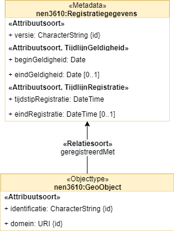
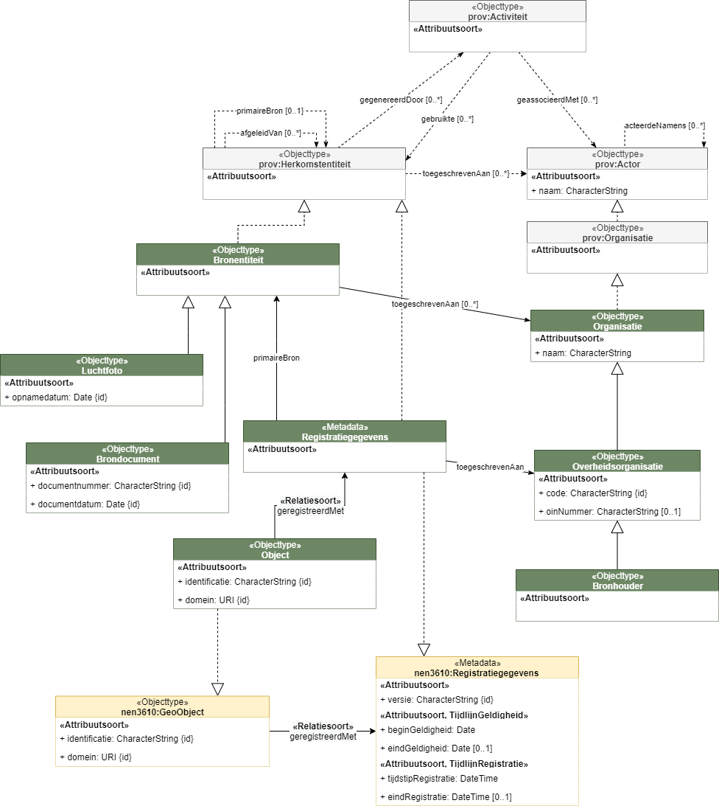
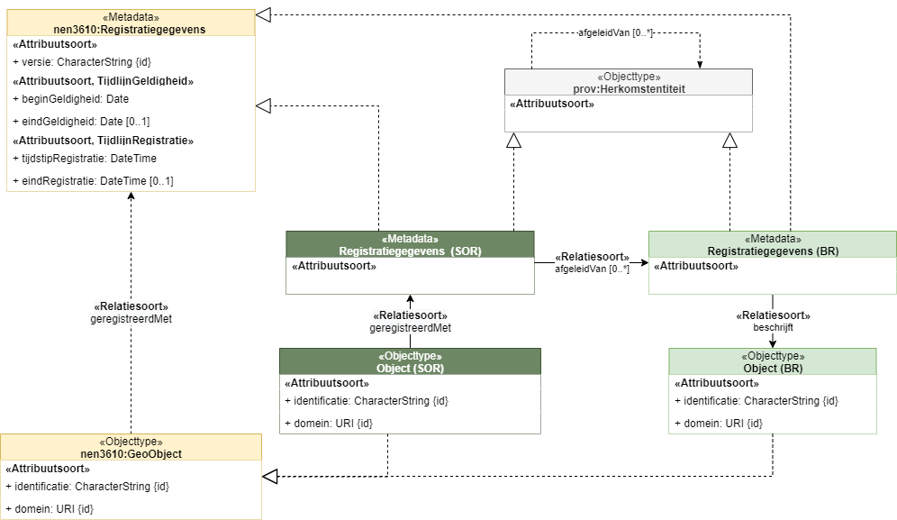
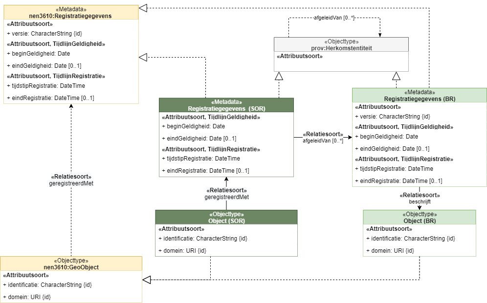
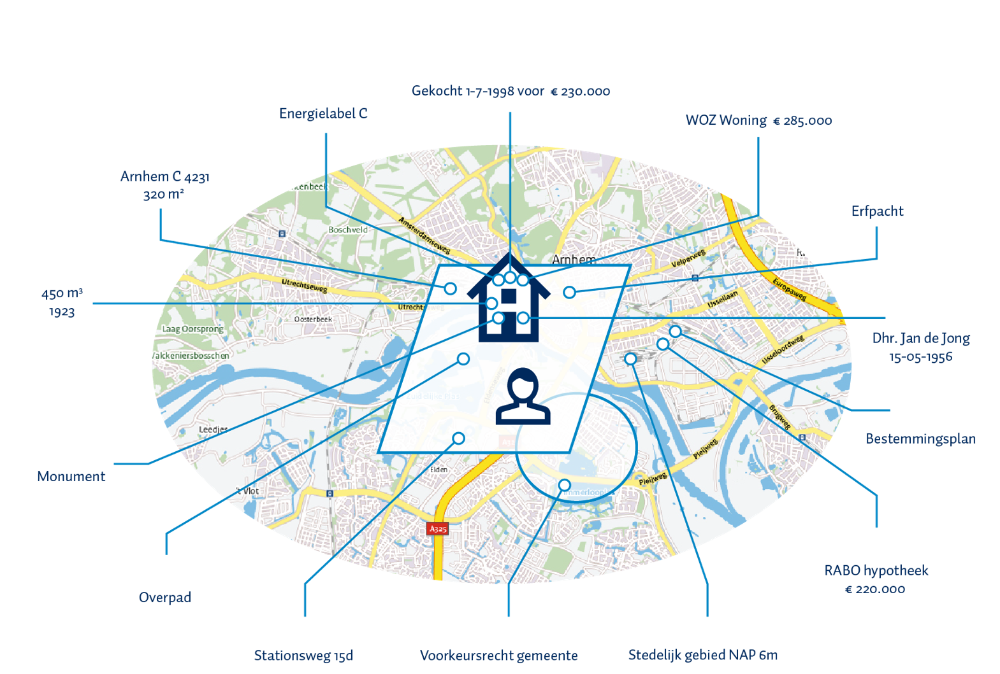
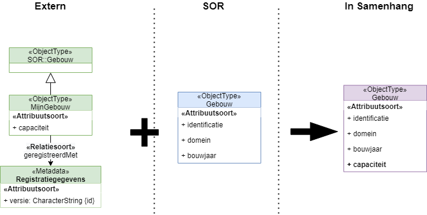
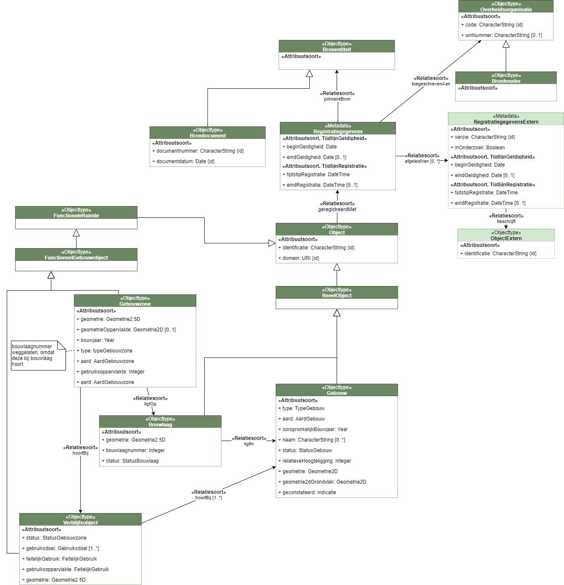
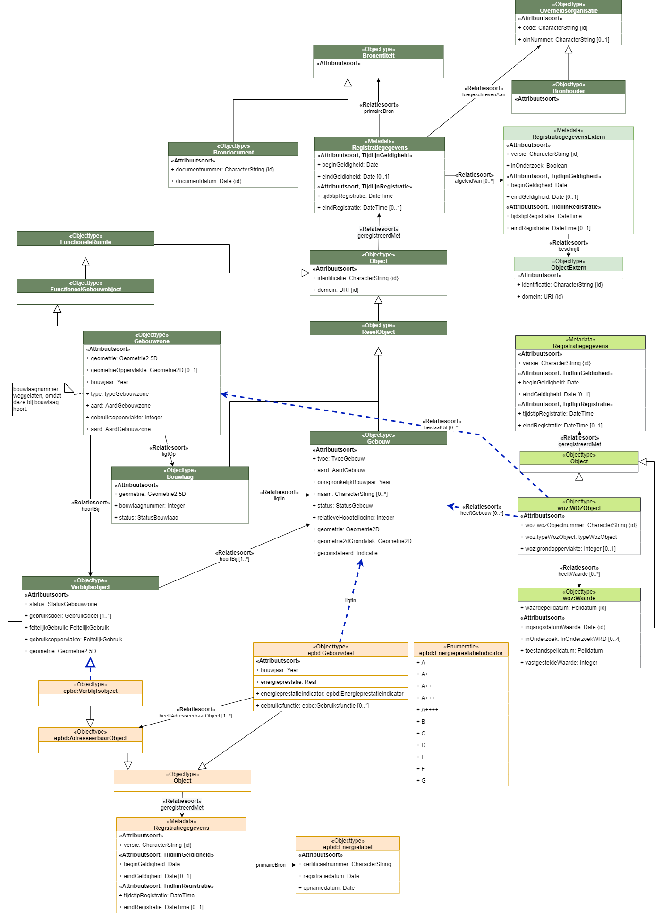

Creative Commons Attribution 4.0 International Public License (CC-BY)
Samenvatting DisGeo High5
In het kader van DiSGeo zijn er tussen 23 en 27 augustus nieuwe inzichten opgedaan omtrent de ontwikkeling van de samenhangende objectenregistratie. Gedurende vijf dagen is onderzoekend een overkoepelend informatiemodel "Gebouwen" ontwikkeld op basis van de Eisen aan model samenhangende objectregistratie [EMSO] en de huidige basisregistraties BAG, BGT, BRT, en WOZ. Het doel is om naar een samenhangend gegevenslandschap toe te werken, zonder dat de SOR er al is. Dit document beschrijft de inzichten die we verkregen hebben over het modelleren van metadata en historie, over het koppelen van andere informatiebronnen aan de SOR, en over vertaling van huidige informatiebronnen naar de SOR. Daarnaast introduceren we een eerste SOR conceptmodel voor informatie over gebouwen. In een apart hoofdstuk beschrijven we de tijdens de High5 geleerde lessen.
Status van dit document
Deze paragraaf beschrijft de status van dit document ten tijde van publicatie. Het is mogelijk dat er actuelere versies van dit document bestaan. Een lijst van Geonovum publicaties en de laatste gepubliceerde versie van dit document zijn te vinden op https://www.geonovum.nl/geo-standaarden/alle-standaarden.
Dit is de definitieve versie van de algemeen. Wijzigingen naar aanleiding van consultaties zijn doorgevoerd.
1. Inleiding
In het kader van Doorontwikkeling in Samenhang van de Geo-basisregistraties (DiSGeo) zorgt Geonovum voor een stapsgewijze informatiemodellering van de Samenhangende Objecten Registratie, de SOR.
De stapsgewijze ontwikkeling van het informatiemodel voor de SOR wordt zo opgezet dat de gegevensspecificaties uit de betrokken basisregistraties (BAG, BGT, BRT en deels de WOZ) op basis van de eisen aan het model, behoudens bepaalde daarin geformuleerde wijzigingen, zo optimaal mogelijk een plek kunnen vinden in de nieuwe omgeving waardoor de aanvullende inspanning voor betrokkenen uit het werkveld in de bijhouding zo klein mogelijk wordt gehouden.
In dit kader is er ook ruimte om in inspirerende onderzoeksweken (High-5's) specifieke onderwerpen te onderzoeken en daaruit lessen te trekken die in het vervolg van de informatiemodellering kunnen worden toegepast.
1.1 Waar komen we vandaan?
Alvorens dieper in de materie te duiken is het belangrijk om de context te begrijpen waarbinnen de huidige ontwikkelingen plaatsvinden. Bij het registreren van gegevens ontstaat er momenteel een tweedeling: aan de ene zijde het object waarnaar de registraties verwijzen, aan de andere zijde de registratieketens. Momenteel staan deze registratieketens centraal. Echter zijn er verschillen tussen ketenprocessen - in semantiek, actualiteit, etc. Om toch de ketenprocessen op elkaar af te stemmen worden onderlinge relaties gelegd via applicatiekoppelingen. In de praktijk is er echter toch behoefte aan een betere afstemming. Verschillende werkprocessen kunnen dan ondersteund worden vanaf het moment dat er een verandering plaatsvindt aan een object.
Dit houdt in dat het straks mogelijk moet zijn om gegevens te kunnen aanpassen of bekijken per object: we gaan van losse registraties naar samenhangende gegevensobjecten. Op deze manier worden gebruikers niet belast met de manier waarop organisaties de data verwerkt hebben voor hun interne processen.
Het informatiemodel van de SOR moet daarom een samenhangend gegevensmodel zijn. Dit heeft gevolgen voor de wijze van modelleren; in plaats van een model waarin de gegevens centraal staan, gaan we toe naar object-centraal modelleren. Iets dat we in deze high 5 onderzoeken.
1.2 Wat is in deze high-5 onderzocht
Het doel:
te beproeven of het mogelijk is de basisregistraties in samenhang te bevragen, waarbij deze samenhang nog niet in de data (in de vorm van relaties tussen instanties) aanwezig is, en zonder de onderliggende registraties of de data die daarin staan aan te passen. De samenhang wordt gerealiseerd door een samenhangende, integrale semantische laag die ervoor zorgt dat vragen over registraties heen kunnen worden gesteld en beantwoord.
Een interessante invalshoek is een mogelijke samenhang met het IGO traject van DisGeo. Een belangrijk inhoudelijk verschil tussen deze High-5 en het IGO-traject is dat men in het IGO kijkt naar integraal gebruik op basis van de beschikbare bronnen, en daarbij uit gaat van de bestaande gegevensstructuren. In het kader van de SOR kijken we primair gebruiksgericht, uitgaande van een samenhangend gegevensmodel; en van daar uit naar de databronnen.
In deze High-5 hebben we ons puur gericht op het maken van een semantisch model. Deze High-5 krijgt in het najaar van 2021 een vervolg waarin we dit model implementeren in een proefomgeving. We willen dan beproeven in welke mate (60/40 / 70/30 / 80/20) het SOR resultaat haalbaar is op basis van de huidige basisregistraties, en willen daarbij ontdekken op welke punten data-integratie bij de bronnen wel nodig is.
1.3 Hoe doen we dat?
We maken op basis van de eisen aan de DiSGeo inhoud een beknopt informatiemodel, voor een afgebakend onderwerp. We hanteren hierbij de door Geonovum, in samenwerking met de expertgroep DisGeo informatiemodel, opgestelde modelleerprincipes (nog in concept) en eerste concept-modelleringen van generieke zaken zoals historie, metadata en levensduur. Het informatiemodel is inclusief:
Begrippenkader (SKOS)
Informatiemodel conform MIM 1.1 (UML)
We passen Model Driven Architecture (MDA) toe. Uit het informatiemodel leiden we ten behoeve van de 2e High5 af:
een RDF model i.e. een samenhangend semantisch model van het gekozen afgebakende onderwerp
OAS 3 API’s
1.4 Hoofdvragen
“Object centraal modelleren”: Hoe doe je dit waarbij de gegevens van dit object uit verschillende registraties komen met verschillende contexten (definities, historie, …)
Hoe druk je de semantische integratielaag uit als context boven de verschillende registraties, waarin de gegevens zijn zoals ze zijn, en waarvan de integratielaag onafhankelijk is? Is de semantische integratielaag (met data centraal over meerdere registraties) de representatie van de samenhang in gegevenscatalogi?
Wat bedoelen we met een semantische laag?
1.5 Verdiepende vragen
Behandeld:
Lukt het om een RDF model geautomatiseerd af te leiden uit het UML model, conform MIM 1.1?
Zijn er handmatige stappen nodig om het afgeleide RDF model ‘goed’ te maken, zoals bedoeld in het NEN 3610 Linked Data profiel?.
Moet het informatiemodel een conceptueel of logisch model zijn en waarom? Wat is het verschil tussen de twee?
Op welke wijze zorgen we voor semantiek bij de bron? Hoe borgen we de MDA? M.a.w. hoe richten we de informatie-architectuur in?
Op welke manieren drukken we de relaties tussen objecten (en/of informatieobjecten) uit? Drukken we de samenhang uit met URI’s? Waar ontstaan ze en hoe houden we ze bij?
Zijn er verbeteringen te noemen voor de DisGeo modelleerprincipes (zijn ze houdbaar, zijn ze volledig, etc)?
Wel benoemd, maar nog niet aan toegekomen:
Hoe kunnen we het informatiemodel relateren aan het begrippenkader? Wat is de relatie tussen die twee? En wat wordt de relatie tussen informatiemodel, begrippenkader en de data zelf?
Hoe kunnen we de verschillende producten (SKOS begrippenkader, UML informatiemodel, RDF model) publiceren?
Wat voor afspraken zijn er te maken rondom URI patroon en het gebruik van URIs voor begrippen, ontologie, en data (hierbij aandacht voor URI’s in NL API strategie)?
1.6 Onderzoeksgebied: Gebouwen
Voor deze High-5 is gekozen voor een afgebakend onderzoeksgebied. We richten ons op het onderdeel Gebouwen van de SOR omdat dit onderwerp raakt aan meerdere basisregistraties.
Daarnaast zijn in het kader van gebruik twee beleidsthema's geselecteerd die in samenhang hiermee bevraagd worden:
Energielabels
Energieafgiftepunten
1.7 Eerdere DiSGeo-high-5's
In 2019 en 2020 zijn twee High-5's uitgevoerd in het kader van DiSGeo.
Uitgangspunt: Maak een demonstrator geodata in samenhang waarbij wordt getoond wat Linked Data voor DiSGeo kan betekenen.
Conclusies:
Linked Data is geschikt (onmisbaar) om de DisGeo ambities met betrekking tot het in samenhang bevragen van de basisregistraties te realiseren;
Zowel als directe toegangslaag, en als basis voor API's en viewers;
Er zijn geen grote technische belemmeringen gevonden.
2. Scope van de High-5
Tijdens de eerste uren van de High-5 hebben we gezamenlijk de scope besproken aan de hand van enkele scope-bepalende vragen.
2.1 Wat is ons startpunt?
Het inhoudelijke startpunt voor ons modelleerwerk is het DiS Geo: Eisen aan model samenhangende objectenregistratie document [EMSO]. De laatste inzichten van de DisGeo werkgroep Inhoud - Gebouwen zijn daarin beschreven. Voor ons van belang in dat document is ook het hoofdstuk Transitie / transponering, waarin beschreven is wat de relatie is tussen SOR inhoud en de huidige registraties. Hoewel de informatiemodellen van de huidige basisregistraties niet ons startpunt zijn, kijken we er wel naar, om te zien hoe deze zich verhouden tot het gewenste SOR model en wat er aan eventuele afleidingsregels nodig is.
2.2 Hoe zit het met 3D representaties van objecten?
Voor deze High-5 is 3D buiten scope. We gaan uit van wat je uit de huidige basisregistraties kan halen, eventueel via afleiding. 3D representaties zitten nu niet in een basisregistratie. De 3D basisvoorziening bevat al wel 3D representaties van BAG/BGT objecten en ook de relatie met deze objecten is vastgelegd; het is dus mogelijk om het 3D model bij een object op te vragen.
2.3 Is de BRT in scope?
We hebben besloten de BRT te parkeren voor deze High-5. De BRT valt wel binnen de scope van de SOR; maar de relatie met BGT en BAG is niet eenvoudig te leggen. In het IGO traject is een analyse gedaan van de verhouding tussen BRT objecten en functies met andere basisregistraties. Zij hebben onder andere gevonden dat er een n op n relatie is tussen BRT en BAG/BGT. Er staan ook gebouwen in de BRT die niet in de BAG/BGT staan. De BRT transponering staat bovendien niet in [EMSO] beschreven.
Hoewel niet eenvoudig, is het wel zeer interessant om in een latere fase naar de BRT te kijken in de context van SOR gebouwen. Je zou aan de hand van het object Gebouw kunnen onderzoeken hoe generalisatie in de semantische laag kan worden gedefinieerd. BRT is tevens interessant omdat het rijk is aan functies, ook voor gebouwen. In de SOR zijn deze BRT gebouwfuncties in samenhang gebracht met de functiebeschrijvingen in de WOZ. Dit heeft geresulteerd in de type lijst bij SOR Gebouw. Gekeken moet worden hoe deze informatie kan worden afgeleid uit de BRT en de WOZ.
2.4 Wat is de relatie van energielabels met de SOR?
Het energielabel is typisch een gegeven van buiten de SOR; het moet mogelijk zijn voor een externe partij om dit te koppelen aan een SOR object. Daarmee is het energielabel in scope van deze High-5. Het is een mooie use case om externe gegevens aan de SOR te koppelen.
Er is geen informatiemodel energielabels; we baseren ons in deze High-5 op een proza beschrijving.
Van energielabels weten we het volgende:
Je kan altijd van een verblijfsobject het energielabel vinden, maar een energielabel kan aan verschillende verblijfsobjecten hangen.
Energielabels kunnen gerelateerd zijn aan een deel van een gebouw of aan een verblijfsobject. Wat dit 'deel van gebouw' is, is nog onduidelijk. Soms is dit een ruimtelijke 'koker' binnen een flatbebouw; daar lijkt een soort gebouwzone handig voor, maar in de huidige [EMSO] definitie past dat niet, want een gebouwzone moet zich volgens die definitie binnen een verdieping bevinden. Je zou hiervoor iets als de CityGML BuildingUnit moeten hebben.
2.5 Gebouw in de huidige registraties
In de huidige basis- en sectorregistraties zijn er veel gegevens te vinden over een "gebouw". Als input voor deze High-5 hebben we de informatiemodellen van deze registraties genomen:
BAG
BGT
WOZ
EPBD - Energielabels
EAN - Energie afgiftepunten
In onderstaand plaatje hebben we getracht om deze te combineren tot één informatiemodel, zonder scherp te kijken naar de specifieke definitie van gebouw, noch kijkende naar de betekenis van eigenschappen.
Figuur 1Gebouw en aanverwante gegevens in huidige registraties
Dit plaatje gebruiken we als startpunt voor de ontwikkeling tijdens de high-5 van een logisch SOR-informatiemodel voor gebouwen.
De volgende achtergrondinformatie stond bij de modellering tot onze beschikking:
Tijdens de High-5 is gezamenlijk verkend welke inhoudelijke punten, betreffende het realiseren van de SOR inhoud op basis van de inhoud van de huidige basisregistraties, relevant zijn. Niet al deze punten zijn uitgebreid aan de orde geweest. We beschrijven hieronder de besproken punten en geven aan welke nader zijn uitgewerkt in de volgende hoofdstukken.
3.1 Transponering
Transponering is het omzetten van gegevens uit de huidige basisregistraties naar SOR gegevens. In deze omzetting zijn allerlei gradaties waar te nemen. Soms gaat het om gegevens die rechttoe rechtaan 1 op 1 te mappen zijn. Hieraan hebben we in deze High-5 geen speciale aandacht verleend. Er zijn ook gegevens die niet 1 op 1 van een basisregistratie over te nemen zijn naar de SOR. Denk hierbij vooral aan afgeleide gegevens, geaggregeerde gegevens of aan gegevens die een betere benaming hebben gekregen. Al deze vormen van omzetten van gegevens bij elkaar worden in dit document ook wel transponering genoemd. deze term wordt ook gebruikt in [EMSO].
Een eenvoudige vorm van transponering is het wijzigen van de naam van objecttypen, attribuutsoorten en andere modelelementen. Hierbij bestaan complicerende factoren zoals:
Het samenvoegen van waardelijsten, zoals bijvoorbeeld in de SOR gebeurt met de waardelijsten die de mogelijke statussen van objecten opsommen. Hierbij kan het gaan om hiërarchische lijsten die moeten worden vertaald naar een geaggregeerde status (zie [EMSO]).
Attribuutsoorten zoals 'type' die meerdere keren voorkomen en dus naamgevingsconflicten kunnen opleveren.
De verschillende aspecten van transponering zijn tijdens deze High-5 bekeken. Zie hiervoor:
Op dit moment is er geen eenduidige identificatie van een SOR object. Als het SOR object niet één op één in een basisregistratie is geregistreerd, heeft het in elke basisregistratie waar het voorkomt een eigen identificatie. Een SOR Gebouw heeft bijvoorbeerd een BAG identificatie, een BGT identificatie en een BRT identificatie. Deze identificaties zijn van belang omdat ze de herkomst van het object duiden. We kunnen echter niet drie attributen genaamd identificatie opnemen, dan zou er een naamgevingsconflict ontstaan. Naast deze bronidentificaties is het wellicht ook van belang om een SOR identificatie in te voeren. Hierbij speelt de UOI mogelijk een rol.
Identificatie van objecten speelt een rol bij de behandeling van historie en tijdreizen, waar we uitgebreider op ingaan in .
3.3 Kwaliteit
Een ander groot onderwerp dat aandacht vraagt binnen de SOR is de kwaliteit van gegevens, en het bevestigen hiervan door een bronhouder. Het is hierbij niet de bedoeling om kwaliteitscontroles te modelleren, we doen dit alleen als er op inhoud bepaalde regels gelden voor gegevens of een combinatie van gegevens. Het gaat onder andere om metadata die iets over kwaliteit van gegevens zegt, zoals bronverwijzing, in onderzoek, en controlegegevens.
Als gegevens in samenhang een bepaalde consistentie behoren te hebben, kunnen er regels worden opgesteld die gaan over een bepaalde combinatie van gegevens. Dit geldt bijvoorbeeld bij functie en gebruiksdoel van een gebouw. Bepaalde functies van een gebouw zijn benoemd in de WOZ - geconstateerde functies - en in de BAG - vergunde functies. Wanneer deze niet in samenspraak met elkaar zijn, is het van belang om dit te weten. Dit is WOZ en BAG kennis, die een afnemer (meestal) niet heeft. Wanneer een verblijfsobject als gebruiksdoel kantoorfunctie heeft en de WOZ constateert dat het gebruikt wordt voor wonen, dan is het feitelijke gebruik niet legitiem. Dit zou bijvoorbeeld kunnen worden uitgewerkt voor het thema wonen.
Dit onderwerp is niet in zijn totaliteit uitgebreid aan de orde geweest, maar zou voor de volgende High-5, als we met gegevens gaan werken, wellicht geschikt zijn. Deeluitwerkingen zijn hier beschreven:
3.4 Op gelijke wijze modelleren van generieke gegevens
Bepaalde generieke gegevens zoals gegevens over historie, levensloop, herkomst, enzovoort zouden over registraties heen gestandaardiseerd moeten zijn, maar zijn dit nu niet. Bij het gebruiken van de basisregistraties in samenhang is dit een belemmering. We willen dat het gebruik door afnemers niet onnodig complex/genuanceerd wordt en kijken of dit recht te trekken is. We hebben daarom in deze High-5 onderzocht hoe je dit soort generieke gegevens zou kunnen modelleren zodat gebruik in samenhang mogelijk is. Dit hebben we uitgewerkt voor het onderwerp historie.
Zie hiervoor .
3.5 Afleiden van relaties tussen objecten
De inhoudelijke eisen aan de SOR [EMSO] vragen in sommige gevallen om het afleiden van relaties tussen objecten, die nu in de bronregistraties niet aanwezig zijn. Deze relaties zijn (voor een deel) geometrisch af te leiden. Het afleiden van deze relaties en het vervolgens administratief uitdrukken van deze relaties heeft als voordeel dat gebruikers, die in deze relaties geïnteresseerd zijn, dit niet opnieuw hoeven doen.
Het gaat bijvoorbeeld om:
Relateren van gebouwcomponent aan gebouw
Relateren van BRT gebouw aan gebouwblok (geometrisch afleiden)
Dit onderwerp is niet uitgebreid aan de orde geweest, maar zou voor de volgende High-5, als we met gegevens gaan werken, wellicht geschikt zijn.
3.6 Gegevens uit andere bronnen
Met de SOR willen we ook het stellen van functionele vragen op basis van gegevens uit andere bronnen dan een basisregistratie faciliteren. Daarom moet het mogelijk zijn om externe gegevens te koppelen aan gegevens in een basisregistratie. Dit is niet altijd zo eenvoudig. Een voorbeeld hiervan zijn de energielabels. Deze zijn te koppelen aan BAG, maar niet altijd rechtstreeks aan een verblijfsobject. Regelmatig is er een relatie tussen één energielabel en een hele groep van verblijfsobjecten.
Onder herkomstmetadata verstaan we gegevens die beschrijven hoe een informatieobject tot stand is gekomen. Dit wordt ook wel de audit trail genoemd.
Voor dit modelleerpatroon baseren we ons op de W3C standaardenset PROV, in het bijzonder [PROV-DM] en [PROV-O].
[PROV-DM] beschrijft een standaard informatiemodel om herkomst (provenance) te definiëren, en definieert provenance als:
provenance is defined as a record that describes the people, institutions, entities, and activities involved in producing, influencing, or delivering a piece of data or a thing
In het kader van de SOR willen we het vooral hebben over de herkomst van "a piece of data", ofwel herkomst van informatieobjecten.
Voor het begrip introduceren we een Nederlandse vertaling van een subset van het PROV model.
Figuur 2Nederlandse vertaling van het W3C PROV model
Voor de herkomst van een informatieobject in de SOR kunnen we een informatieobject als een instantie van (een subtype van) een prov:Herkomstentiteit beschouwen. De herkomst van een prov:Herkomstentiteit kan middels het model vrij uitgebreid beschreven worden, waarbij de afleiding of generatie van een entiteit, de activiteiten die daarbij een rol speelden, en de actoren die handelden of verantwoordelijk zijn, in een keten (audit trail) uitgedrukt kunnen worden.
4.1.1 Modelleerpatroon voor brongegevens
De [EMSO] stelt eisen aan de bronverwijzing als metadata van informatieobjecten. Zie de volgende passage uit [EMSO]:
Bronverwijzing betreft aan de ene kant de formele onderbouwing van gegevens, bijvoorbeeld in de vorm van formele brondocumenten, zoals vergunningen en besluiten, maar aan de andere kant ook de meer technische bron van de gegevens, zoals plaatsbepalingspunten en indirect luchtfoto's, metingen en BIM-modellen.
Gezien deze eisen is het van belang om een modelleerpatroon te formuleren voor het vastleggen van metadata voor brongegevens, opdat dit voor alle informatieobjecten in de SOR op een standaardmanier kan worden toegepast.
Naast de eisen in [EMSO], zijn er ook modelleerprincipes geformuleerd in [MPSOR] die er voor zorgen dat het object centraal wordt gesteld, zodat samenhang gerealiseerd kan worden.
Eén van de modelleerrichtlijnen luidt:
Scheidt registratie-, bron- en herkomstmetadata van directe eigenschappen
Dit houdt in dat we bron- en herkomstmetadata niet op hetzelfde niveau als normale objecteigenschappen zoals bouwjaar en oppervlakte willen uitdrukken. De reden hiervoor is dat directe eigenschappen over het object gaan, en bron- en herkomstmetadata over de informatie over het object.
We hebben dus een aanknopingspunt voor bron- en herkomstmetagegevens nodig dat wel te relateren is aan het beschreven object, maar niet als directe gegevens over het object wordt uitgedrukt. De nieuwe [NEN3610-2021-ontw] biedt uitkomst. Daarin is dit aanknopingspunt al geformuleerd.

Figuur 3NEN 3610 (2021 ontwerp) - Registratiegegevens van GeoObject
De [NEN3610-2021-ontw] schrijft al voor hoe tijdlijnen en versieinformatie van informatieobjecten uitgedrukt kunnen worden, los van de directe gegevens over het object middels het construct Registratiegegevens.
In dit patroon nemen we Registratiegegevens als aanknopingspunt voor opname van verdere bron- en herkomstgegevens. Dit doen we door Registratiegegevens als (subtype van) prov:Herkomstentiteit te beschouwen (Figuur 4).

Figuur 4Toepassing van W3C PROV en NEN 3610 (2021 ontwerp) voor bron en herkomstgegevens
Vervolgens introduceren we de mogelijkheid om verschillende soorten Bronentiteit te definiëren die als primaireBron opgenomen kunnen worden voor een informatieobject. Hierbij maken we gebruik van een standaard [PROV-DM] modelleerpatroon (primary source). Hiermee maken we het bijvoorbeeld mogelijk om een brondocument, of andere bronnen zoals luchtfoto's op een standaard manier op te nemen als bron van een informatieobject. Daarnaast kunnen we zowel deze bronentiteiten, als het informatieobject zelf, toeschrijven aan een verantwoordelijke partij. In het geval van het SOR informatieobject is dat een overheidsorganisatie, maar een bronentiteit zou best van een niet-overheidspartij afkomstig kunnen zijn.
Noot
4.1.2 Modelleerpatroon voor de beschrijving van de afleiding van SOR-informatieobjecten
De implementatie van de SOR zal gefaseerd aangepakt gaan worden. Tijdens deze High-5 verkennen we hoe we in de eerste fase de SOR kunnen neerzetten als een ontsluitingslaag over de verschillende registraties heen. Daarbij zal een SOR-informatieobject dus afgeleid worden kunnen worden uit één of meer informatieobjecten uit onderliggende basisregistraties.
Het is dan ook belangrijk om te kunnen duiden uit welke informatieobjecten een SOR informatieobject is samengesteld, ofwel wat de herkomst van een SOR informatieobject is.
Voor dit doeleinde kunnen we wederom gebruikmaken van het PROV raamwerk voor het opstellen van een modelleerpatroon.

Figuur 5Toepassing van W3C PROV en NEN 3610 (2021 ontwerp) voor de beschrijving van de afleiding van SOR-informatieobject
Hierbij maken we gebruik van een standaard [PROV-DM] modelleerpatroon (derivation), waarbij een entiteit wordt afgeleid uit één of meerdere andere entiteiten. Op deze manier kan een Registratiegegevens instantie uit de SOR, gekoppeld worden met een Registratiegegevens instantie uit de onderliggende basisregistraties, waarmee we uitdrukken uit welke informatieobjecten een SOR-informatieobject is samengesteld.
Noot
5. Modelleren van historie en beantwoorden van tijdreisvragen
Bij dit inhoudelijke punt wordt gekeken hoe gegevens uit verschillende onderliggende basisregistratieonnen te combineren zijn, in het bijzonder voor aspecten die te maken hebben met de historie van gegevens en tijdreizen. De punten waarop gelet moet worden zijn benoemd en er is een vertaalspecificatie gemaakt om historie "in elkaar te schuiven".
5.1 Doel
Een uniforme manier voor afnemers:
1) om te zien wanneer gegevens geldig zijn en wanneer deze gegevens geregistreerd/beschikbaar zijn;
2) om een tijdreis vraag te stellen.
Deze tijdreisvragen zijn (ook) los aan de basisregistraties te stellen. In deze High-5 echter wordt de tijdreisvraag "door een afnemer" 1x gesteld aan de SOR c.q. het SOR object Gebouw, en wordt deze tijdreis "onder water" aan de basisregistraties gesteld. Hierna worden de gegevens van de basisregistraties over een Gebouw die op de gevraagde datums geldig en beschikbaar zijn "in elkaar geschoven". De specificatie voor dit in elkaar schuiven en de uitkomst ervan worden hieronder beschreven.
Noot
5.2 Uitgangspunten
SOR afspraak: van alle gegevens moet bekend zijn wanneer de gegevens geldig zijn en wanneer ze beschikbaar/geregistreerd zijn.
We modelleren conform MIM - maar MIM kent nog geen metadata. We volgen daarom de huidige stand van de expertgroep modellering SOR.
We modelleren conform NEN3610 - zie modellering historie aldaar.
De uitwerking is conform de specificatie van een tijdreis zoals beschreven in de NL API strategie (en hoe dit bv. in de LVBAG werkt, die deze implementeert).
De uitwerking is in lijn met de SOR en met hoe de basisregistraties nu werken (de data die beschikbaar is of beschikbaar gemaakt zou kunnen worden).
Dit betekent voor dit inhoudelijke punt:
We stellen het object centraal - d.w.z. we willen gegevens over het gebouw in de werkelijkheid leveren, en we doen dit door de registratiegegevens over dit object te leveren.
We geven de tijdslijnen per set gegevens over een object aan. Dit heet ook wel een versie van een object. Afnemers willen gegevens van/over een object weten en wanneer deze, dit setje, geldig is en beschikaar is gekomen zodat ze het (hadden kunnen) weten.
5.3 Uitdaging en bijzondere punten
De uitdaging is om data uit de onderliggende basisregistraties uit te leveren maar dan geuniformeerd. D.w.z. dat historie wordt bijgehouden in of over versies van objecten. Een versie is een setje gegevens over een object, zoals deze gedurende een bepaalde periode onveranderd zijn, en over die set gegevens wordt de tijdslijn geldigheid en de tijdslijn registratie bijgehouden en uitgeleverd.
De uit te werken bijzondere punten voor historie en tijdreizen zijn:
Definities van de tijdslijn geldigheid en de tijdslijn registratie.
Als we het object centraal stellen, hoe gaan we dan om met objecten uit 2 of meer basisregistraties die we in elkaar schuiven, in het bijzonder met meerdere identificaties.
Niet elke geo-basisregistratie kent nu beide tijdslijnen. Maar informatie over wanneer gegevens geldig en beschikbaar/geregistreerd zijn is wel beschikbaar.
Niet elke geo-basisregistratie heeft voor de tijdslijn geldigheid hetzelfde dataype, sommige gebruiken een datum, sommige een datumtijd of een timestamp. Hoe gaan we hiermee om?
Mutatieverschillen, met name t.a.v. beëindigen van objecten, wat bv. de BGT doet met een einddatum geldigheid en de BAG met een eindstatus.
Hoe schuif je versies van objecten uit verschillende basisregistraties in elkaar; wat is het algoritme?
Ad 0. definities van tijdslijn geldigheid en tijdslijn registratie
Elke Landelijke Voorziening (LV) die een verzameling is van een basisregistratie heeft een eigen tijdslijn van verwerking in de LV. We onderkennen dus tijdstipRegistratie bij de basisregistratieonhouder en tijdstipRegistratie bij de LV.
Van elk gegeven houden we het registratietijdstip bij. Dit geldt ook voor wanneer een beginGeldigheid of eindGeldigheid is geregisteerd in een basisregistratie en in een LV. Elke versie van een object heeft een begin geldigheid, en het tijdstip van de registratie van een versie van een object geeft (ook) aan wanneer deze begin geldigheid is geregistreerd. Evenzo geldt dit voor de einde geldigheid, het tijdstip waarop eind geldigheid geregistreerd wordt moet bekend zijn en eind registratie geeft (ook) aan wanneer deze eind geldigheid is geregistreerd.
Ad 1. in elkaar schuiven van versies van objecten uit meerdere basisregistraties of basisregistratieonnen
Een SOR object kan en mag meerdere identificaties hebben. Het voordeel hiervan is dat de link naar de basisregistratie(s) bekend is.
Wanneer een SOR object meerdere identificaties heeft, dan betekent dit dat je elk afzonderlijk kan gebruiken als identificatie, en dat de objecten uit de onderliggende basisregistraties over hetzelfde SOR object en hetzelfde object in de werkelijkheid gaan.
Ad 2. niet elke geo-basisregistratie kent nu beide tijdslijnen
Om de geldigOp tijdreis vraag (welke gegevens waren bekend binnen een bepaald tijdvak) te kunnen stellen moet een basisregistratie weten wanneer de gegevens geldig zijn. Elke basisregistratie hoort te weten wanneer de gegevens die erin geregistreerd zijn geldig zijn. Deze tijdslijn geldigheid wordt echter niet altijd fysiek vastgelegd. Als dit niet zo is, dan is het nodig om deze af te leiden. Vertaal dan wat er geregistreerd is in de basisregistratie naar de gevraagde tijdslijnen.
Elke basisregistratie die aansluit op de SOR moet kunnen:
De tijdslijn geldigheid en de tijdslijn registratie leveren (dit kan zijn via een interne afleiding in de basisregistratie).
De NL AP strategie geldigOp (moment in de tijdslijn geldigheid) en beschikbaarOp (moment in de tijdslijn registratie) implementeren.
Vanuit de basisregistratie een eindstatus leveren (bekijk of je in de basisregistratie deze ook registreert, of dat je deze afleidt).
Vertaalspecificatie tijdslijnen:
BAG: kent beide tijdslijnen. Geen vertaling nodig.
WOZ: kent beide tijdslijnen. Geen vertaling nodig.
BGT: kent nog geen tijdslijn geldigheid.
Alleen de BGT heeft dus een vertaalspecificatie nodig voor de tijdslijn geldigheid. De BGT kan dit het beste zelf aangeven. Denk bv. aan:
begin geldigheid = tijdstip registratie
eind geldigheid = eindRegistratie. Wellicht nog wat logica rondom geconstateerd.
Aanname is dat de BGT dit kan en doet.
Ad 3. Niet elke geo-basisregistratie heeft voor de tijdslijn geldigheid hetzelfde dataype
Vertrekpunt van de SOR is dat een afnemer een vraag stelt: welke gegevens zijn er geldig op een bepaalde datum, veelal vandaag. Een gewone afnemer gaat niet zo snel een timestamp opgeven in deze vraag. Voor basisregistraties worden besluiten ook genomen op dagbasis. Het is wel zo dat als er twee versies van een object op dezelfde dag geldig zijn/worden dat de laatste van de twee het antwoord is op de vraag: "wat is er vandaag geldig".
Voor wat betreft het datatype voor geldig op en het datatype voor begin en einde geldigheid, is hier een keuze te maken voor de SOR.
Optie a) We gebruiken altijd een DatumTijd voor geldigheid. In basisregistraties die alleen een datum kennen, gebruiken we die datum en dan 00:00:00.
Voor de geldigOp parameter wordt altijd een DatumTijd gebruikt.
Bij meerdere versies van een object op een dag vinden we bij deze geldigOp altijd de laatste de meest actuele voor die dag. We gebruiken dus niet 00:00:01 en 00:00:02 enz. Hier zijn we data aan het bijverzinnen.
Optie b) We volgen bij de tijdslijn geldigheid de definitie van de basisregistratie. Daarom: gebruik een keuze tussen datatypes.
Voor de geldigOp parameter wordt altijd een datum gebruikt.
Bij meerdere versies van een object op een dag vinden we bij deze geldigOp altijd de laatste de meest actuele voor die dag, mits dit verantwoord kan bij elke basisregistratie. Dit kan als de betekenis van meerdere versies op een dag is, dat de laatste vigerend is vanaf het moment dat die versie is ontstaan.
Optie c) We gebruiken altijd een Datum. Immers, besluiten voor basisregistraties gaan in op een datum.
We willen ernaar toegroeien dat de tijdslijn geldigheid altijd een datum is. Dit is nu al te implementeren, mits ofwel de basisregistratie ofwel de SOR view erop goed omgaat met meerdere versies op 1 dag.
Voor de geldigOp parameter wordt altijd een datum gebruikt.
Bij meerdere versies van een object op een dag vinden we bij deze geldigOp altijd de laatste de meest actuele voor die dag.
De implicatie van deze optie is dat een basisregistratie om moet kunnen gaan met wanneer er meerdere versies op 1 dag geldig zijn en deze kan onderscheiden van elkaar.
Advies: gezien het groeipad willen we onderzoeken of c) mogelijk is.
KEUZE: C
Ad 4. Mutatieverschillen
Wanneer een object wordt beëindigd en de basisregistratie geen eindstatus kent, dient een basisregistratie te zorgen voor ofwel de registratie, ofwel het afleiden, van een extra versie met wel een eindstatus. Het is aan de basisregistratie om te kiezen of er wel of niet een versie met een eindstatus wordt geregistreerd of dat deze wordt afgeleid.
Ad. 5 Hoe schuif je versies van objecten uit verschillende basisregistraties in elkaar
Onderstaande een verkenning, die uitgaat van alle genoemde keuzes in de voorliggende tekst.
basisregistratie 1:
- versie 1, begin geldigheid t1 -
basisregistratie 2:
- versie 1, begin geldigheid t3 -
SOR:
Stel vraag aan basisregistratie 1: geldigOp t4.
Antwoord: versie 1. gebruik deze gegevens voor het SOR object.
Stel vraag aan basisregistratie 2: geldigOp t4.
Antwoord: versie 1. gebruik deze gegevens voor het SOR object.
Maar hoe doen we het met de tijdslijnen?
Optie 0: lever de losse antwoorden uit de losse basisregistraties ook los door, maar wel technisch in hetzelfde antwoord en bij elkaar.
--> 1 versie in basisregistratie 1 en 1 versie in basisregistratie 2 = 2 losse versies
(niet in elkaar geschoven).
Optie 1: laat elke basisregistratie heel duidelijk terugkomen in het SOR object
Geef van elk gegeven uit basisregistratie 1 aan: herkomst basisregistratie1, en de historie metagegevens zijn: begin geldigheid t1 -
Geef van elk gegeven uit basisregistratie 2 aan: herkomst basisregistratie2, en de historie metagegevens zijn: begin geldigheid t3 -
Bv. een gegevensgroep voor gegevens uit basisregistratie 1 + de metagegevens voor historie uit basisregistratie 1 en voor basisregistratie 2 analoog.
--> 1 versie in basisregistratie 1 en 1 versie in basisregistratie 2 = 1 versie van het SOR object,
bestaande uit de delen die elk afzonderlijk tijdslijnen hebben.
Optie 2: plaats alle kenmerken in het SOR object en bereken voor elk setje gegevens eigen tijdslijnen.
Introduceer nieuwe versies voor elke periode.
--> 1 versie in basisregistratie 1 en 1 versie in basisregistratie 2 = 2 versies van het SOR object,
met elk afzonderlijk tijdslijnen.
Deze laatste is het meeste in lijn met de intentie van de SOR en met de insteek: bepaal van elke setje gegevens wanneer dit setje geldig is.
KEUZE: voor deze exercitie gaan we uit van optie 2, om te kijken of dat goed kan. De voorbeelden die we gaan uitwerken in de volgende paragrafen zijn hiermee in lijn.
Illustratieve voorbeelden
Dezelfde voorbeelden hebben we ook uitgewerkt met de tijdslijn registratie erbij. Uitgaande van:
tijdstipRegistratie: het moment waarop begin geldigheid is geregistreerd.
eindRegistatie: het moment waarop de eind geldigheid is geregistreerd/bepaald.
KEUZE Dit is een regel die voor de BAG en de BRK geldt. Deze is toegepast. Dit past binnen NEN3610.
De voorbeelden worden dan als volgt uitgebreid:
Ook voor andere, complexere voorbeelden zullen we uitwerkingen moeten maken. Onder andere een voorbeeld met meerdere geldige versies op één dag, met een registratietijdstip waarvan de begin geldigheid op een latere tijd ligt dan het registratie tijdstip van de eind geldigheid. De vertaalspecificatie wordt wellicht minder rechttoe rechtaan.
5.4 Modellering van historie in de SOR
Het informatiemodel gaat uit van het modelleerpatroon van [NEN3610-2021-ontw] waarbij Registratiegegevens over het informatieobject, zoals de tijdlijn geldigheid en tijdlijn registratie in een apart metadata objecttype zitten, dat 1 op 1 gerelateerd is aan het objecttype waar het informatieobject over gaat. Dit tezamen met de modelleerprincipes van de SOR, zorgt er voor dat het object centraal gehouden kan worden, ofwel, dat het objecttype alleen directe eigenschappen van het object kent.

Figuur 6Historie van informatieobjecten in de SOR
Het informatiemodel biedt, zoals beschreven in § 4.1.2Modelleerpatroon voor de beschrijving van de afleiding van SOR-informatieobjecten, ook de mogelijkheid om de herkomst van een SOR informatieobject uit te drukken. Hierbij kan bij de registratiegegevens via afgeleidVan relaties een koppeling gelegd worden met de registratiegegevens van informatieobjecten uit onderliggende registraties. In informatieproducten kan dan gekozen worden om deze herkomstinformatie wel of niet te tonen.
Noot
Noot
Een informatieobject in een concrete serialisatie conform dit modelleerpatroon zou er bijvoorbeeld als volgt uit kunnen zien:
5.5 Uitwerking: voorbeelden uitgewerkt met tijdreisvragen
Op basis van de keuzes zoals gemaakt in dit hoofdstuk werken we hier een fictief complexer voorbeeld uit op basis van het BAG historiemodel, waarin gegevens inactief gemaakt zijn.
Uitgangssituatie
Obj. ID
Versie
Waarde
BG
EG
TR
ER
TI
1000
1
A
01-01-2018
03-03-2019
30-12-2017
01-03-2019
1000
2
B
03-03-2019
01-09-2033
01-03-2019
01-04-2019
01-05-2019
1000
3
H
01-09-2033
01-04-2019
01-05-2019
1000
4
B
03-03-2019
01-05-2019
Fictief voorbeeld uit de WOZ
Obj. ID
Versie
Waarde
BG
EG
TR
ER
2000
0
200k
01-01-2019
01-01-2020
10-01-2019
20-02-2020
2000
1
220k
01-01-2020
20-02-2020
5.5.1 Insteek 'versies': stel de tijdreis vraag aan elke basisregistratie en voeg de antwoorden samen
De tijdreisvraag aan een SOR Gebouw kent maar 1 geldigOp en 1 beschikbaarOp. Stel deze tijdreisvraag aan de basisregistraties die gebruikt worden om het SOR Gebouw samen te stellen. Elk basisregistratie zal als antwoord éém versie van een object opleveren - met een setje gegevens erin - en deze versie kent een tijdslijn geldigheid en een tijdslijn registratie. De tijdslijn van registratie komt doorgaans overeen met het moment van beschikbaarstelling en als dit zo is, dan kunnen de gegevens, maar ook de tijdslijnen, samengevoegd worden.
Oftewel, doe een tijdreis op de BAG en de WOZ en breng de gegevens samen in een SOR Gebouw.
Lange formulering: welke gegevens zijn geldig voor dit gebouw op 'datum', met de kennis/data die vanuit de informatievoorziening beschikbaar is/was op 'datumtijd'. De eerste datum wordt gebruikt voor de tijdreis parameter geldigOp en de tweede voor beschikbaarOp. De tijdsreis wordt beantwoord door eerst alle gegevens weg te filteren die na beschikbaarOp in de registatie zijn geregistreerd (inclusief einddatum geldigheid en eind registratie). Van de gegevens die overblijven wordt de geldigOp vraag gesteld. Deze vragen worden "onder water" aan de BAG gesteld en aan de WOZ.
Korte formulering: welke gegevens zijn geldig op 'datum geldigOp' en beschikbaar op 'datumtijd beschikbaarOp'?
5.5.1.1 Vertaal specificatie
We ontvangen van de onderliggende basisregistraties één versie van een object, die geldig en beschikbaar is op de gevraagde tijdreis. Dat wil zeggen, data die op de gevraagde beschikbaarOp aanwezig was in de registratie. We ontvangen géén data die naderhand is geregistreerd; hieronder vallen ook later ingevulde data zoals 'einde geldigheid', 'eind registratie' en 'tijdstip inactief'.
1) Als een gegeven er is, neem deze op in SOR Gebouw.
2) Als een gegeven er niet is, maar wel zou moeten zijn volgens IMSOR - Gebouw, vul deze in als nillable=true (afhankelijk van gekozen serialisatietaal).
3) Bereken de juiste waardes voor de historie / tijdslijn attributen.
Begin Geldigheid (BG): je krijgt er twee, één van BAG, één van WOZ, kies de nieuwste/laatste die voor/gelijk aan 'geldigOp' ligt/is.
Eind Geldigheid (EG): je krijgt er twee, één van BAG, één van WOZ, kies de vroegste/eerste die na/gelijk aan 'geldigOp' ligt/is.
Tijdstip Registratie (TR): je krijgt er twee, één van BAG, één van WOZ, kies de TR die hoort bij de geselecteerde BG.
Eind Registratie (ER): je krijgt er twee, één van BAG, één van WOZ, kies de ER die hoort bij de geselecteerde EG.
4) Neem de identificaties van de onderliggende objecten en overige data die erbij hoort over in de (optionele) 'herkomst data'.
Noot
5.5.1.2 Tijdreisvragen
Noot
5.5.2 Insteek 'levenscycli': vraag de geldige levenscycli op met een tijdreis en voeg deze samen
Een andere insteek is om de levenscyclus van de BAG en die van de WOZ op te vragen en om op basis hiervan de gegevens samen te voegen. Dit is ook nodig als een afnemer de levenscyclus van een SOR gebouw opvraagt. Voor tijdreizen is het altijd zo dat een afnemer naar geldige gegevens vraagt, met de kennis die de informatievoorziening had over de objecten. Het is dus niet nodig om de hele levenscyclus op te vragen. Het volstaat om de geldige levenscyclus op te vragen op de aangegeven beschikbaarOp. Nadat deze in elkaar geschoven zijn kan aan het resultaat - de geldige levenscyclus van het SOR Gebouw - gevraagd worden wat de geldige gegevens zijn op de aangegeveven geldigOp.
Uitgangssituatie (gelijk aan eerder genoemde)
Obj. ID
Versie
Waarde
BG
EG
TR
ER
TI
1000
1
A
01-01-2018
03-03-2019
30-12-2017
01-03-2019
1000
2
B
03-03-2019
01-09-2033
01-03-2019
01-04-2019
01-05-2019
1000
3
H
01-09-2033
01-04-2019
01-05-2019
1000
4
B
03-03-2019
01-05-2019
TI staat voor tijdstip inactief. Deze gegevens waren geldig tot 01-05-2019 maar zijn dit hierna niet meer.
Obj. ID
Versie
Waarde
BG
EG
TR
ER
2000
0
200k
01-01-2019
01-01-2020
10-01-2019
20-02-2020
2000
1
220k
01-01-2020
20-02-2020
5.5.2.1 Vertaal specificatie
Doe een tijdreis naar de geldige levenscyclus van de BAG, zoals beschikbaar op een bepaalde datum.
Doe een tijdreis naar de geldige levenscyclus van de WOZ, zoals beschikbaar op een bepaalde datum.
Schuif deze in elkaar.
Controleer of elke levenscyclus alleen geldige gegevens/versies bevat.
BAG: geen gegevens met bv. tijdstipNietBAG of tijdstip inactief. WOZ: vergelijkbare controle indien van toepassing.
Zet alle bron-versies van bron 1 en bron 2 in een lijst op begin datum, en hou per versie de BG en TR (er) bij.
Als twee versies dezelfde BG hebben, sorteer ze op TR (oudste eerst).
We hebben nu een bron-versie-lijst.
Per BG-TR combinatie gaan we 1 versie maken, oftewel als uit bron 1 X versies komen en uit bron 2 Y versies dan maken we X + Y versies.
De einddatums van deze versies moeten nog bepaald worden. Zet alle EG datums op een rij in een bronnen-EG-lijst en hou bij elke EG bij welke ER erbij hoort.
Doorloop de bron-versie-lijst.
Neem de eerste versie uit de bron-versielijst: maak een 1e SOR versie met deze BG en bijbehorende TR en plaats deze in de SOR-versie lijst.
Neem de 2e versie uit de basisregistratieon-versielijst: maak een 2e SOR versie met deze BG en bijbehorende TR en plaats deze in ed SOR-versie lijst.
Enz.
Bepaal de EG van de SOR-versies in de SOR-versielijst.
Geef de 1e SOR versie als EG de datum die voorkomt als BG in de 2e versie.
Geef de 2e SOR versie als EG de datum die voorkomt als BG in de 3e versie.
Enz.
Bepaal de ER van de SOR-versies in de SOR-versielijst.
Doorloop voor elke SOR-versie de basisregistratieon-EG/ER lijst.
Als een SOR-versie een EG heeft:
Zoek de 1e EG op in de basisregistratieonnen-EG-lijst die overeenkomt met de EG van de SOR-versie.
Bij een match: neem de bijbehorende ER over naar de SOR-versie. Verwijder deze EG/ER entry uit de basisregistratieonnen-EG-lijst
Bij geen match: neem als TR de TR die hoort bij de BG van de volgende SOR-versie.
Controleer of de tijdslijn geldigheid tussen de SOR versies netjes op elkaar aansluiten.
1e SOR-versie EG = 2e SOR versie BG.
2e SOR-versie EG = 3e SOR versie BG.
laatste SOR-versie EG = leeg en heeft een eindstatus.
Bepaal de functionele gegevens van de SOR-versie.
Bepaal voor elke SOR-versie:
is er overlap op de periode BG-EG van de SOR-versie met een geldige versie van basisregistratieon 1? Zo ja, voeg de gegevens van deze basisregistratieon-versie toe aan de SOR-versie.
is er overlap op de periode BG-EG van de SOR-versie met een geldige versie van basisregistratieon 2? Zo ja, voeg de gegevens van deze basisregistratieon-versie toe aan de SOR-versie.
Enz.
Bij meerdere SOR-versies op 1 dag: TODO.
Wellicht zijn er betere algoritmes denkbaar. Dat kan uiteraard besproken worden.
Er zijn verschillende manieren waarop historie in linked data gerepresenteerd kan worden. Deze manieren hebben verschillende voor- en nadelen die we hier inzichtelijk maken.
6.1 Variant 1: Uitspraak reïficatie
In deze variant wordt de historie volledig weergegeven binnen de graaf structuur zelf. De graaf structuur bevat zowel de uitspraken over objecten, alsook de registratieve gegevens die bij die uitspraken horen (bijvoorbeeld begin- en eind geldigheid). Een visuele weergave hiervan is te vinden in Figuur 7.
Het afzonderlijk representeren van uitspraken als op zichzelfstaande entiteiten wordt in linked data “uitspraak reïficatie” genoemd.
Deze variant maakt gebruikt van:
Standaard RDF triples.
RDF uitspraak reïficatie.
Sets van RDF uitspraken
Figuur 7Historie representatie op basis van uitspraak reïficatie
6.2 Variant 2: Graaf reïficatie
In deze variant wordt de historie weergegeven buiten de graaf structuur. De graaf structuur bevat de uitspraken over objecten. De registratieve gegevens over die uitspraken worden toegekend aan de totale graaf waarin de uitspraken over objecten zich bevinden. Een visuele weergave hiervan is te vinden in Figuur 8.
Het afzonderlijk representeren van grafen als op zichzelfstaande entiteiten wordt in linked data “graaf reïficatie” genoemd.
Deze variant maakt gebruik van:
Standaard RDF triples.
RDF graaf reïficatie.
Figuur 8Historie representatie op basis van graaf-reïficatie
In deze variant wordt de historie weergegeven binnen en buiten de graaf. Binnen de graaf bevinden zich zowel uitspraken over objecten, alsook sommige registratieve gegevens over die uitspraken. Hiervoor wordt binnen de graaf gebruik gemaakt van uitspraak reïficatie. Naast de registratieve gegevens binnen de graaf zijn er ook registratiegegevens die over de graaf zelf gaan. Hiervoor wordt graaf reïficatie toegepast. Een visuele weergave hiervan is te vinden in Figuur 9.
Deze variant maakt gebruik van:
Standaard RDF triples.
RDF uitspraak reïficatie.
RDF graaf reïficatie.
Figuur 9Historie opslag op basis van graphs
6.4 Variant 4: Ontkoppeling
In deze variant wordt de representatie van observaties losgekoppeld van de representatie van objecten. Beide representaties worden weergegeven binnen de graaf structuur en zijn verbonden middels een herleidbaarheidsrelatie. Inhoudelijke eigenschappen komen twee keer voor: één keer op het niveau van de observatie en één keer op het niveau van het object. Een visuele weergave hiervan is te vinden in Figuur 10.
Deze aanpak wordt momenteel toegepast binnen IGO.
Deze variant maakt gebruikt van:
Standaard RDF triples.
Figuur 10Historie representatie op basis van ontkoppeling
6.5 Variant 5: Ontkoppeling + Data Cube
Deze variant lijkt op variant 4, maar maakt gebruik van de Data Cube standaard om de uitspraken over observaties op een gestandaardiseerde manier vast te leggen. Een visuele weergave hiervan is te vinden in Figuur 11.
Figuur 11Historie representatie op basis van ontkoppeling en Data Cube
6.6 Vergelijkingstabel
Tabel 1 ― Vergelijking tussen de voor- en nadelen van de verschillende varianten voor historie representatie in linked data.
1
2
3
4
5
duplicatie van eigenschappen
+
+
+
-
-
standaards-conform
+
+
+
-
+
metadata opslag op uitspraak niveau
+
-
+
-
+
technische haalbaarheid: grafen
+
-
-
+
+
technische haalbaarheid: reïficatie
-
+
-
+
+
7. Gegevens koppelen tussen een SOR Gebouw en een andere informatiebron

Dit betreft use cases waarin een informatiebron (niet de SOR zelf) wilt koppelen met een object in de SOR, zoals een informatiebron met energiegegevens.
De bronnen waaruit de SOR wordt samengesteld zijn andere bronnen dan waar de energiegegevens worden bijgehouden. Wat in ieder geval niet de bedoeling is, is het overnemen en opslaan van de data uit deze bronnen naar de SOR. In plaats daarvan beogen we een federatief stelsel, waarin de verschillende bronnen worden bevraagd en de data uit deze bronnen in samenhang geleverd kunnen worden aan afnemers. De informatiebron met energiegegevens kan gecombineerd worden met de informatiebron SOR (of een basisregistratie).
In dit geval gaat het niet om het aanbrengen van samenhang tussen gegevens van de basisregistraties onder de SOR, maar van het aanbrengen van samenhang tussen gegevens uit andere bronnen met de data van de SOR. Anders gezegd, de SOR kent de energiegegevens niet, maar de energiegegevens kent wel een SOR object (of basisregistratie object) en door een koppeling hiertussen te leggen zijn beide informatiebronnen integraal te bevragen en kunnen gegevens bij elkaar gebracht worden.
We noemen de niet-SOR bronnen in onderstaande tekst: andere bronnen.
De belangrijkste stap is voor een andere bron om eerst een betrouwbare koppeling te leggen van een andere bron naar de SOR, al dan niet via de BAG, de BGT, de WOZ, enz. Dit is op zichzelf niet eenvoudig. je kan hierbij denken aan een koppeling op basis van een automatische matching op basis van adres, geometrie, of beide.
7.1 Manieren van koppelen
Bij het leggen van een koppeling zijn in theorie verschillende manieren denkbaar. We kijken naar elk van deze en naar de voors en tegens ervan.
optie 1: Deze koppeling zou een beheerde relatie kunnen zijn vanuit een bestaand object uit een andere bron naar een SOR object.
optie 2: Deze koppeling zou een nieuw "koppeling" object kunnen zijn, een geobjectiveerde relatie, die een bestaand object uit een andere bron met een SOR object koppelt. Deze verandert het SOR object niet en verandert het eigen bronobject niet. Je zou dit een koppelklasse kunnen noemen.
optie 3: Deze koppeling zou een uitbreiding of aanvulling kunnen zijn van een bestaand SOR objecttype.
Voorbeelden van deze koppelingen zijn:
De EAN-BAG koppeling (beheerde relatie vanuit een eigen object, het energieafgiftepunt, uit een andere bron naar een BR/SOR object)
De BRK-BAG koppeling (koppelklasse die beide bronnen niet aanpast)
De BGT-BAG koppeling (Semantische relatie tussen BGT Pand en BAG Pand)
Uitgangspunten:
1. De koppeling loopt in principe altijd van een "andere" bron naar de SOR.
Voordelen:
Er is geen impact op de SOR, maar het koppelt wel beide bronnen aan elkaar;
Er ontstaat een eco-systeem waarmee informatie uit bronnen gekoppeld kan worden met de SOR en de basisregistraties.
Via deze koppelingen zijn andere bronnen ook met elkaar te koppelen. Als een bron A met object A1 een koppeling heeft met SOR object S1 en een andere bron B met object B1 heeft deze koppeling ook, dan zijn ook A1 en B1 ook (indirect) gekoppeld. Afhankelijk van de semantiek van de koppelingen naar S kan deze indirecte koppeling zelfs verder gebruikt worden.
Implicaties:
Andere bronnen (moeten) gaan koppelen met de SOR (koppelingen naar basisregistraties worden vervangen door koppelingen naar de SOR);
2. Binnen de SOR zelf zijn er koppelingen tussen de BAG en de BGT, de BAG en de WOZ, maar deze zijn voor de gebruikers van de SOR verborgen.
3. Van de SOR naar een andere bron zal er geen koppeling zijn (in theorie wel mogelijk).
4. Een koppeling kan ook gelegd worden als deze zuiver geometrisch kan worden bepaald.
Nadat een koppeling is gelegd, moet deze ook beheerd worden. Maar zodra de koppeling er is, kunnen gegevens uit de SOR en uit de "andere" bron bij elkaar gebracht worden.
Hier zijn een aantal opties denkbaar.
7.2 Combineren van de eigen bron met SOR gegevens
Er zijn verschillende modelleerpatronen waaraan gedacht kan worden. Deze patronen hebben we in de High-5 verkend. Elk patroon heeft eigen voordelen en nadelen; er is nog geen voorkeur uitgesproken, en nog geen advies per situatie. We gaan deze opties verder onderzoeken.
Algemeen kunnen we wel de volgende voorwaarden stellen voor een samenhangend stelsel van informatie gekoppeld aan de SOR:
Maak goed duidelijk wat de herkomst van het gegeven is qua bron - uit de SOR of uit een externe bron, bijvoorbeeld het energie domein;
Wanneer je wilt meedoen in het samenhangde stelsel zal jouw dataset moeten voldoen aan dezelde logische aspecten als de SOR
voor tijdreizen is dezelfde uitdrukking van tijdslijnen nodig
voor het kunnen koppelen of platslaan van identificatie is dezelfde manier van identificeren nodig
Dat levert de volgende voordelen op:
Afnemers kunnen via de ontsluiting van het samenhangde stelsel informatie uit verschillende datasets in combinatie met de SOR informatie opvragen, zonder dat ze deze combinatie zelf moeten maen.
Een afnemer hoeft niet de bronnen apart te bevragen en zelf de software te ontwikkelen;
De bron-beheerder en de SOR-beheerder kunnen er samen voor zorgen dat het informatieproduct functioneel helemaal goed/juist is, afnemers hoeven dit niet te doen.
Daarbij spelen de volgende implicaties:
De verantwoordelijkheid van het meeleveren van gegevens komt bij de informatieproductleverancier te liggen (in overleg met de SOR);
De eisen aan gegevens voor basisregistraties gaan ook gelden voor de informatievoorziening die het informatieproduct levert, zoals de beschrijving en de standaarden die hiervoor gelden, de historie tijdslijnen en tijdreis mogelijkheden.
7.2.1 Voorbeeldcasus
Voor het duiden van deze verschillende modelelerwijzes gebruiken we de voorbeeldcasus uitgebeeld in Figuur 12. We hebben twee "externe" objecttypes Gebouwdeel en MijnGebouw die we op verschillende manieren willen koppelen met Gebouw uit de SOR.
Figuur 12Voorbeeldcasus te koppelen informatiemodellen
7.2.2 Relateren van verschillende objecttypes
7.2.2.1 Optie 1: Koppelen vanuit een andere bron naar de SOR met een relatie
Deze koppeling zou een beheerde relatie kunnen zijn vanuit een andere bron object naar een SOR object. Dit kan op verschillende manieren:
7.2.2.1.1 a: Meegemodelleerd in dataset als relatie
Je kunt een relatie meemodelleren in een dataset door vanuit die dataset een relatie op te nemen naar een SOR-object. De relatie wordt een (nieuwe) eigenschap van een al bestaand object uit de eigen/andere bron.
Om aan te duiden dat deze relatie verwijst naar een extern informatiemodel gebruiken we het stereotype «Externe koppeling» uit [MIM]. Merk op dat we in het externe informatiemodel verwijzen naar objecttype Gebouw uit de SOR. Het doel hiervan is het kunnen verwijzen naar een SOR Gebouw d.m.v. de identificatie van de SOR. Het is, in de representatie als data, belangrijk om niet alleen een directe referentie naar de identificatie op te nemen, maar om daadwerkelijk een objectstructuur van het gerefereerde object op te nemen. Dit laatste maakt het gemakkelijk om datastructuren als het ware over elkaar heen te leggen (zie datavoorbeelden in JSON).
Figuur 13Relatie met SOR object meegemodelleerd in (externe) dataset
Je beheert de relatie bij de andere objectinformatie
7.2.2.1.2 b: Apart beheerde "linkset"
Wanneer je een objecttype uit een bestaande dataset wilt koppelen aan de SOR, zonder het objecttype, of de dataset, zelf aan te passen is het mogelijk om een aparte "linkset" op te stellen. De link van het object A1 naar het SOR object S1 wordt dan buiten het bestaande object beheert, als link. De link bevat alleen de identificatie van A1 en van S1. De link is een aanvulling op het bestaande object, maar wordt wel los beheerd.
Een linkset is niets meer dan een set van relaties tussen instanties van twee objecttypen, van het bestaande object naar het SOR object.
Deze linkset kan onderdeel zijn van dezelfde dataset die je wilt koppelen aan de SOR, maar kan ook een losse dataset zijn met verschillend beheer.
Figuur 14Relatie met SOR object meegemodelleerd in (externe) apart beheerde "linkset"
Ook hier maken we gebruik van objectstructuur plus identificatie om informatie "over elkaar heen te leggen" en in samenhang te presenteren.
Noot
Implicaties:
De SOR en je eigen objecten worden niet geraakt, op geen enkele manier, maar er is wel een relatie gelegd.
Je kan de historie van de relatie los beheren.
De link en het bestaande object hebben elk eigen historie.
7.2.2.2 Optie 2: Apart beheerde koppelinstanties
Een andere optie is het definieren van een nieuw objecttype, die de koppeling vertegenwoordig tussen objecten van objecttype A uit bron A en objecttype S uit de SOR. We noemen dit een koppelklasse. Een Koppelklasse is een speciaal construct waarmee twee objecttypes aan elkaar gekoppeld kunnen worden met uitgaande relatiesoorten vanuit de Koppelklasse naar de Objecttypes die met elkaar gekoppeld worden. Semantisch gezien is dit gelijk aan het relateren van twee objecten.
Bv. het objecttype AS-koppeling. Koppelingen komen te liggen tussen individuele objecten/instanties van A en individuele objecten/instantie van S, door middel van AS-objecten, die verwijzingen hebben naar A en S. Bv. een koppeling AS1 tussen A1 en S1 of AS2 tussen A21 en S35 enz.
Het beheer van de koppeling zit dan in principe op het niveau van de koppelklasse.
Noot
Noot
Figuur 15Relatie met SOR object als instantie van een koppelklasse in (externe) dataset
De SOR en je eigen objecten worden niet geraakt, op geen enkele manier, maar er is wel een koppeling.
Je kan de historie van de koppeling los beheren.
Je moet afleidingsregels specificeren om de semantische relatie tussen de gekoppelde objecten te manifesteren.
7.2.3 Uitbreiden van een bestaand objecttype
Voorwaarde:
Dit kan alleen als je eigen objecttype echt overeenkomt met wat er in de SOR onder een Gebouw wordt verstaan. Als dat zo is dan is dit semantisch direct goed geregeld.
In de implementatie zal het, vanwege het bijhouden van historie, nodig zijn om in je eigen object historie bij te houden op dezelfde manier als de SOR dit doet.
7.2.3.1 Optie 1: Specialiseer het SOR object en gebruik dezelfde identificatie
Hier breiden we een SOR objecttype in een externe dataset uit door deze op informatiemodelniveau te specialiseren en op instantieniveau gebruik te maken van de SOR identificatie voor identificeren van het object waarvoor we de gespecialiseerd beschrijving opnemen.
Noot

Figuur 16Specialiseer het SOR object in (externe) dataset en gebruik de SOR identificatie
Het is direct duidelijk dat alle definities en afbakeningen van de SOR ook gelden voor de extensie (de specialisatie is je eigen object, het SOR Gebouw is de generalisatie).
Hergebruik van de identificatie maakt het gemakkelijk om de externe (uitbreiding van ) gegevens te combineren met de SOR gegevens.
7.2.3.2 Optie 2: Stel het externe object gelijk aan het SOR object met een speciale relatie: isGelijkAan
Het is niet altijd mogelijk om dezelfde identificatie als de SOR te gebruiken. Mogelijk bestaat er al een andere identificatie in de externe registratie die ook waarde heeft buiten de context van de SOR. Deze optie introduceert een speciale relatie isGelijkAan, waarmee objecten aan elkaar gelijkgesteld kunnen worden. Binnen het SOR stelsel zou met deze speciale relatie kunnen bepalen dat twee verschillende identificatie platgeslagen kunnen worden tot 1 om zo de objectinformatie te kunnen combineren.
Noot
Figuur 17Gebruik eigen identificatie voor (extern) object en stel dat object gelijk aan SOR object
Om te komen tot een samenhangend Gebouw in de SOR, moet data gecombineerd worden uit de BAG, BGT, WOZ en BRT. Om te weten welke data hoe gecombineerd moet worden, is een informatieanalyse nodig en veel kennis van de huidige basisregistraties. Op basis van deze informatieanalyse moeten vertaalregels gespecificeerd worden. De vertaalregels kunnen vervolgens worden gebruikt in de omzetting van data uit de huidige basisregistraties naar de SOR. In een slimme architectuur kunnen deze regels een plek krijgen in de 'semantische laag' die ervoor zorgt dat de data uit de huidige basisregistraties in samenhang kunnen worden benaderd. De vertaalregels vertellen dan precies hoe de data uit de basisregistraties moeten worden omgezet naar data conform het IMSOR model.
Tijdens deze High-5 hebben we een eerste (zeer kleinschaling!) begin gemaakt met het opstellen van zulke vertaalspecificaties, vooral om te beproeven waar we bij dit werk allemaal tegenaan lopen.
We hebben voor de SOR objecttypen Gebouw, Gebouwzone en Gebouwlaag een eerste aanzet tot een mapping gemaakt. Hierbij bleek dat je in zo'n mapping twee soorten gevallen tegenkomt:
Het gegeven is aanwezig in een bronregistratie en moet worden vertaald naar een gegeven in de SOR (en hierbij heb je dan nog allerlei gradaties van eenvoudige naar complexe mappings). Bijvoorbeeld: het gegeven bouwlaag van WOZ deelobject kan worden vertaald naar bouwlaagnummer van SOR Gebouwzone.
Het gegeven is niet als zodanig aanwezig in een bronregistratie, maar kan wel worden afgeleid. Bijvoorbeeld: de 2.5D geometrie van Gebouwlaag. Gebouwlaag zit als attribuut in de WOZ, maar niet met een eigen geometrie. Dit gegeven kan op een slimme manier wellicht wel worden afgeleid uit de in WOZ en BAG aanwezige gegevens over 2D geometrie, gebouwtype, oppervlakte en bouwjaar.
Voor het realiseren van een semantische laag bovenop huidige registraties (volgens het model van de SOR) zijn dus vertalingsregels en afleidingsregels nodig. Deze willen we vastleggen op conceptueel niveau, zodat ze onafhankelijk zijn van een specifieke technische omgeving en (met hulp van de informatiemodelleur) zowel door domeinexperts als door programmeurs begrepen kunnen worden.
Vertalingsregels geven aan hoe de gegevens uit verschillende bronnen zich laten vertalen in gegevens conform het model van de SOR. Deze regels kunnen gericht zijn op de specifieke registraties in het kader van de SOR, waarbij mappings worden toegepast gebaseerd op transponeringstabellen. Echter is het ook wenselijk om deze regels zodanig op te stellen dat ze generiek genoeg zijn voor hergebruik buiten de context van de basisregistraties. Dit zou waardevol zijn voor de aansluiting met sectorale registraties; het gaat dan over breed toepasbare modelleerpatronen.
Afleidingsregels zijn nodig om uniformiteit te waarborgen. In gevallen waar het belangrijk is om afgeleide informatie vast te leggen in de SOR, dient deze afleiding op gestructureerde wijze te worden vastgelegd. Hiermee kunnen interpretatieverschillen in de inwinning/vastlegging van gegevens worden vermeden.
Afleidingsregels hebben betrekking op datgene wat momenteel niet expliciet in de registraties is opgenomen, maar wel van belang is voor de SOR. In principe zullen er geen afleidingsregels worden gespecificeerd voor bestaande registratiegegevens die momenteel worden afgeleid uit andere registraties. Echter is het wel belangrijk deze gevallen in kaart te brengen, zodat in een latere fase kan worden gekeken naar automatische afleiding vanuit de SOR.
8.2 Verschillende soorten vertalingsregels
Vertalingsregels kunnen eenvoudige één op één mappings zijn, maar ook complexe omzettingen. Toen we keken naar de mappings vanuit BAG, BGT en WOZ naar SOR Gebouw kwamen we op vertalingsregels die van zeer eenvoudig to zeer complex gingen. In deze paragraaf geven we een overzicht van de varianten.
Vertalingsregels kunnen betrekking hebben op vertalingen tussen de volgende elementen:
In basisregistratie
In SOR
Voorbeeld
waardelijst waarde
waardelijst waarde
Simpel geval: BRT-Gebouw.typeGebouw Toren = SOR-Gebouw.type Toren. Het komt ook voor dat de waarde in de bronregistratie een nauwer begrip lijkt te zijn van een waarde in de SOR, bijvoorbeeld: BRT-Gebouw.typeGebouw Boortoren < (specifieker dan) SOR-Gebouw.type Toren*. Soms lijkt er een relatie te zijn tussen de waardes van lijsten die behoren tot verschillende objecttypes. In deze gevallen is extra aandacht nodig voor het mappen en afleiden van attributen/relaties.
WOZ-object.aanduiding_repeterend ja = SOR-Gebouw.aard repeterend
objecttype
attribuutsoort waarde
nog niet gevonden
attribuutsoort waarde
objecttype
WOZ bouwlaag attribuut met getalswaarde wordt in SOR objecttype Bouwlaag met eigen 2.5D geometrie. NB hierbij moet de geometrie afgeleid worden.
Noot
9. Inventarisatie van manieren om vertaalspecificaties vast te leggen
Zoals in het vorige hoofdstuk is uitgelegd, zijn er in de SOR vertalingsregels en afleidingsregels nodig die uitdrukken hoe de SOR inhoud zich verhoudt tot de gegevens in de bestaande basisregistraties. Deze regels willen we vastleggen op conceptueel niveau, zodat ze onafhankelijk zijn van een specifieke technische omgeving en zowel door domeinexperts als door programmeurs begrepen kunnen worden.
Hiervoor hadden we niet direct een uitdrukkingsvorm voorhanden. Meestal worden vertaalspecificaties, vaak transformaties genoemd, in een technische omgeving uitgedrukt. Soms gebeurt dit op basis van vertaal- of 'mapping'-tabellen; deze hebben een niet-formeel karakter en complexere regels zijn er moeilijk in uit te drukken. We hebben tijdens de High-5 een korte inventarisatieronde gedaan van mogelijke uitdrukkingsvormen voor vertaalspecificaties.
9.1 INSPIRE harmonisatiemethode
Bij het harmoniseren van eigen data naar INSPIRE geharmoniseerde data moet veel data getransformeerd worden uit bronsystemen naar het INSPIRE datamodel.
Vaak wordt hier de tool HALE studio voor gebruikt. Hierin kun je vertaalspecificaties voor gegevens uitdrukken. Hoe dit precies eruit ziet en of je deze vertaalspecificaties ook kunt hergebruiken buiten de HALE omgeving weten we nog niet.
In het programma Basisregistratie Ondergrond (BRO) zijn vertaalspecificaties gemaakt van bron naar INSPIRE in Excel tabellen. Zie voorbeeld.
9.2 Niet-formele vertaaltabel
In het IGO project zijn vertaalspecificaties opgenomen in een vertaaltabel die kon worden gebruikt om samen met domeinexperts (die de inhoud kenden) vast te leggen hoe gegevens moesten worden gemapt of afgeleid. Daarna zijn deze specificaties in SPARQL construct statements geïmplementeerd.
Ook in het programma Basisregistratie Ondergrond (BRO) zijn vertaalspecificaties vastgelegd in een vertaaltabel (zie onder INSPIRE harmonisatiemethode).
9.3 Visuele mapping tools
Er bestaan ook visuele mapping tools. Binnen het IGO traject werd bijvoorbeeld de tool Weaver gebruikt. Zie voorbeeld.
In de context van XML transformatie zijn er visuele mapping tools op de markt, waaruit XSLT gegenereerd kan worden voor de technische transformatie; zie bijvoorbeeld Stylus Studio. Er is echter nooit een visuele uitdrukkingsvorm gestandaardiseerd. Deze visuele mapping tools hebben dezelfde beperking als mapping tabellen: complexere mappings zijn niet altijd goed te visualiseren.
9.4 UML
UML heeft voor zover wij konden ontdekken geen mogelijkheid om vertaalspecificaties uit te drukken in modelvorm. Hierbij plaatsen we de kanttekening dat UML zeer uitgebreid is, waardoor het kan zijn dat er wel een mogelijkheid bestaat die wij over het hoofd zagen.
UML biedt wel in klasse-diagrammen een mogelijkheid om aan te geven dat een property van een class derived is. Maar meer dan een aanduiding is dit niet; je kunt niet aangeven hoe de property zich verhoudt tot datgene waaruit hij is afgeleid.
Imvertor gebruikt wel een soort mapping relaties tussen conceptuele en logische modellen: tracing. Of dit geschikt is voor onze doeleinden hebben we niet kunnen bepalen.
9.5 QVT
Query/View/Transformation (QVT) is een aan UML gerelateerde standaard voor model transformaties. Ons is geen bestaande toepassing hievan bekend, maar vanwege de nauwe relatie met UML is het de moeite waard om ons hier verder in te verdiepen. Tijdens de High-5 hebben we dat nog niet gedaan.
9.6 XSLT
XSLT is een bekende declaratatieve transformatietaal waarin je kunt uitdrukken wat de transformatieregels zijn om van een bronformaat naar een doelformaat te komen. Het declaratieve karakter maakt de taal interessant; dit betekent dat de transformatieregels niet uitdrukken HOE een computer de vertaling van bron naar doel moet uitvoeren, maar alleen WAT de relatie is tussen bron en gewenste doel.
XSLT is echter een uitdrukkingsvorm op technisch implementatie-niveau (het zijn scripts; niet te lezen voor een domeinexpert) en werkt alleen met XML input. Daardoor is het voor ons doel niet geschikt.
Voor het vastleggen van de herkomst van een gegeven, moeten we het gegeven als PROV Entiteit modelleren. Dit betekent dat we een individueel gegeven als object moeten kunnen beschrijven, zodat we deze kunnen voorzien van extra eigenschappen. Hoe je dit het beste kunt doen moet verder onderzocht worden.
9.8 SHACL Rules
Met SHACL Rules ([SHACL-AF]) is het mogelijk om op basis van "shapes" in bestaande in RDF uitgedrukte gegevens, in combinatie met generatieregels, nieuwe gegevens af te leiden.
9.9 GraphQL
In GraphQL specificeer je een standaardschema, dat de brondata beschrijft, en een doelschema, dat beschrijft wat je terug wilt krijgen. Deze druk je uit in GraphQL queries. Net als bij XSLT heeft GraphQL een declaratief karakter.
Net als XSLT is GraphQL een taal op technisch implementatie-niveau, maar het abstraheert wel van verschillende soorten datastores. Daarom vinden we het interessant om te verkennen in de volgende High-5.
9.10 RML
Met RML (RDF Mapping Languague) kun je willekeurige gestructureerde data transformeren naar een doelmodel in RDF. De ingrediënten voor een mapping zijn:
Een manier om data te verkrijgen;
Een manier om over een deel van de data te itereren;
Een mapping naar het doelmodel.
Een vergelijkbare mapping-opzet zou ook toegepast kunnen worden voor het transponeren van gegevens. Hiervoor zouden bouwblokken uit RML hergebruikt kunnen worden. RML heeft bijvoorbeeld een rijke mogelijkheid om transformatiefuncties mee te nemen in een mapping op een declaratieve manier.
10. Gebouwen van bron naar SOR
10.1 Gebouw vertaalspecificatie
In het [EMSO] document, dat de inhoudelijke eisen aan de SOR beschrijft, is geen sprake meer van 'panden'; in plaats daarvan wordt het objecttype Gebouw geïntroduceerd. Alle BAG/BGT panden kunnen één op één worden omgezet naar SOR Gebouw. Daarnaast kan een aantal typen BGT OverigBouwwerk gemapt worden naar SOR Gebouw.
De juiste WOZ data bij het juiste gebouw vinden is lastiger. De relatie tussen de typering van gebouwen in de SOR en de gebruiksdoelen, functies en typen van gebouwen in de BAG, WOZ en de BRT blijkt complex te zijn. Dat betekent ook dat het mogelijk nog heel lastig wordt om de geharmoniseerde SOR gebouwen, met name wat betreft de WOZ data, te vormen op basis van de huidige basisregistraties. In ieder geval is voor het maken van de juiste vertaalspecificaties veel inhoudelijke kennis van het WOZ informatiemodel en de WOZ data nodig.
In het geval dat het SOR gebouw niet een vestingsgebouw, bijgebouw of schuur is, zullen er in principe twee geometrieën aanwezig zijn: omtrekgeometrie van de BAG en grondvlakgeometrie van de BGT. Beide nemen we over bij het gebouw. Wanneer het wel om één van de eerder genoemde typeringen gaat, zal er alleen een BGT geometrie aanwezig zijn en nemen we die over.
Type
Nieuw / BRT / WOZ
Dit is een nieuw attribuut. De 'hoofdtyperingen' die hier worden geïntroduceerd zijn niet aanwezig in de huidige modellen, met uitzondering van Toren - deze is aanwezig in de BRT. Alle nadere typeringen in de waardelijst komen zowel uit de BRT als uit de WOZ. Vaak is het 1:1 overgenomen (waarbij het om soortgelijke begrippen kan gaan, maar ook nadere typeringen - zie ook de lijst met voorbeelden van vertalingsregels), soms zijn de termen/begrippen anders beschreven - om deze reden is het belangrijk na te gaan in hoeverre deze termen en begrippen daadwerkelijk overeenkomen in betekenis. Hiervoor is nadere analyse nodig en gedetailleerde kennis van de inhoud.
Aard
Nieuw / WOZ
Het attribuut zelf is nieuw ten opzichte van de registraties, de waardes niet. Voor Repeterend heeft de WOZ een attribuut aanduiding repeterend. De transponering voor de waardes Heterogeen en Vrijstaand is minder expliciet. Vrijstaand komt vaak terug in de typeringen van SOR Verblijfsobjecten (de waardes in deze lijst, waar vrijstaand in voorkomt, zijn afkomstig van de waardelijst Type voor WOZ-objecten). Het is dus mogelijk een gegeven dat moet worden afgeleid. De herkomst van Heterogeen is onduidelijk.
Oorspronkelijk bouwjaar
BAG
Direct uit de BAG te halen, bij bouwjaar. Let wel op dat WOZ Deelobjecten (vaak SOR Gebouwzones) ook een bouwjaar bevatten. In principe zou het oudste bouwjaar binnen Deelobjecten overeen moeten komen met het BAG bouwjaar. Wanneer dit niet het geval is, kan er sprake zijn van incorrecte data.
Naam
?
Herkomst onduidelijk, mogelijk BRT?
Status
?
In de verschillende basisregistraties wordt er verschillend met statussen en levenscycli omgegaan. Hier is nadere analyse en een uniformeringsslag nodig.
Relatie (vanuit bouwlaag): Bouwlaag ligt in Gebouw
?
Nog niet aan toegekomen.
Relatie (vanuit gebouwcomponent): Gebouwcomponent hoort bij Gebouw
-
De relatie is in de brondata niet aanwezig, maar is met behulp van de geometrieën uit de BGT af te leiden (de gebouwcomponent zit immers aan het gebouw vast).
Relatie (vanuit toegangsdeur): Toegangsdeur hoort bij Gebouw
?
Nog niet aan toegekomen.
Relatie (vanuit installatie): Installatie hoort bij Gebouw
?
Nog niet aan toegekomen.
10.2 Gebouwzone vertaalspecificatie
Het SOR objecttype Gebouwzone is gebaseerd op het WOZ Deelobject. Op basis van de huidige WOZ kun je vermoedelijk wel voor een groot deel de SOR gebouwzones afleiden. Het WOZ deelobject kan in eenvoudige situaties een heel woonhuis zijn, maar er kunnen ook meerdere deelobjecten voor één huis zijn: bijvoorbeeld de woning zelf, een garage en een serre. De indeling in deelobjecten wordt gemaakt op basis van wat voor de waardebepaling van het object van belang is (bijvoorbeeld op basis van mate van isolatie), en niet puur op gegevens zoals het bouwjaar. De bronhouders doen veel marktanalyse en gebruiken hierbij bijvoorbeeld informatie uit verkoopplatforms zoals Funda. Daarnaast wordt de WOZ gevoed met informatie uit de BAG over wijzigingen aan objecten zoals verbouwingen.
Om een idee te krijgen van de data kunnen we kijken in het WOZ waardeloket. Hierin staan alleen de WOZ waarden per WOZ object, maar de contouren van WOZ deelobjecten zijn waar er een directe relatie met de BAG in de data zit, wel gevisualiseerd.
De onderstaande tabel beschrijft voor de gegevens die bij SOR Gebouwzone zijn gespecificeerd, of en hoe deze uit de brondata gehaald kan worden.
Gegeven in SOR
Herkomst
Transponering
identificatie
WOZ
WOZ Deelobject heeft een eigenschap nummerWOZDeelObject die we kunnen overnemen. Dit nummer is uniek in combinatie met het bijbehorende WOZ objectnummer.
geometrie
BAG/BGT
WOZ deelobjecten hebben in de WOZ geen geometrie (in theorie wel - zie geometrie, maar deze wordt niet ingewonnen). Wel zijn ze gekoppeld aan de BAG voor zover er een corresponderend BAG object is. Bijvoorbeeld de geometrie van een woonhuis en van een schuur kun je uit de BAG halen via het gekoppelde verblijfsobject of pand. Maar de geometrie van een tuin of bijvoorbeeld een zwembad, carport, paardenrijbak of agrarische grond niet. De geometrieën van dat soort objecten zitten (deels) in de BGT. Via BAG pand en BGT pand zou je misschien het bij een pand horende erf (tuin) en andere objecten (bordes, carport, luifel, ...) kunnen vinden op basis van geometrische nabijheid en/of in combinatie met het kadastraal perceel.
geometrie afbakening
?
Dit gegeven herkennen we niet. Het lijkt meer een gegeven te zijn voor de bijhouder van de WOZ, de bronhouder, maar niet een gegeven dat voor afnemers relevant is. Het zit niet in de huidige registratie. In een situatie waarin 1 deelobject correspondeert met 1 pand, zou je de BAG of BGT kunnen gebruiken. Vergelijk dan de BAG en BGT geometrie met elkaar: als de polygonen hetzelfde of bijna hetzelfde zijn is het betrouwbaar om uit één van beide het oppervlak te berekenen, anders moet je opletten want dan heeft het gebouw een niet rechttoe-rechtaan vorm.
bouwlaagnummer
WOZ
1 op 1 over te nemen uit WOZ deelobject bouwlaag. NB In de SOR een verplicht gegeven, maar in de WOZ alleen gevuld als de bouwlaag relevant is voor de waardebepaling.
bouwjaar
WOZ
Opgenomen bij deelobject als ofwel bouwjaar (type gYear), ofwel bouwjaarklasse (vrij tekstveld). Toelichting: het WOZ deelobject bouwjaar kan hetzelfde zijn als het oorspronkelijk bouwjaar in de BAG, maar in de WOZ is de informatie over bouwjaar gedetailleerder: als er meerdere deelobjecten zijn, bijvoorbeeld een apart deelobject voor later aanbouwde delen van een pand, is voor elk van deze deelobjecten het daadwerkelijke bouwjaar opgenomen. Het oudste bouwjaar binnen een set deelobjecten zou overeen moeten komen met BAG oorspronkelijk bouwjaar, zo niet dan duidt dat op incorrecte data.
type
WOZ
Dit is in WOZ de gebruikscode (ook wel 'deelobjectcode') - waarschijnlijk het typeWOZDeelObject. Hiervoor is een mapping nodig. Zie transponeringstabel.
aard
WOZ
Kan waarschijnlijk 1 op 1 worden overgenomen, maar dit gegeven zien wij eigenlijk als iets dan vooral belang heeft voor de bronhouder, niet voor de afnemer.
gebruiksoppervlakte
WOZ
WOZ deelobject oppervlakte in combinatie met codeBrutoNettoOppervlakte. Dit geeft aan dat de oppervlakte op verschillende manieren bepaald kan zijn. Als de oppervlakte de gebruiksoppervlakte is, kan die 1 op 1 worden overgenomen. Anders is wellicht een berekening mogelijk. Verder: bij deelobjecten zijnde een woning werd altijd de inhoud in plaats van het oppervlakte bijgehouden. Bij niet woningen was dit wel het oppervlakte. Momenteel zijn de bronhouders de inhoudsgegevens naar oppervlakte aan het omzetten. Aandachtspunt voor ons: Als we met WOZ data gaan experimenteren, moeten we een gemeente selecteren die de transitie van inhoud naar oppervlakte al hebben gemaakt voor woningen. En deze gemeente moet het oppervlak dan wel per deelobject hebben geregistreerd (er zijn ook gemeenten die het gehele oppervlakte bij het WOZ object opnemen).
Mapping: WOZ deelobject bestaatUit of bestaatUitPand. Als het WOZ deelobject correspondeert met BAG objecten (verblijfsobject, standplaats, ligplaats of pand), dan is deze relatie in de brondata opgenomen. Niet alle gebouwzones corresponderen met een BAG object (denk aan tuin, zwembad, ...). Zo niet dan is het een type object dat niet in de BAG zit maar wellicht wel in de BGT. Zie verder de transponering bij het gegeven geometrie.
ligt op bouwlaag
WOZ
Dit zit in de WOZ als eigenschap van WOZ deelobject, maar het is een apart object in de SOR met 2.5D geometrie, dus een vlak met voor elk coördinatenpaar een z waarde. Je kunt de geometrie bij gebouwen met eenvoudige vormen (als de BAG en BGT geometrie ongeveer hetzelfde zijn) van de BAG overnemen en dan aan de hand van bouwlaagnummer, bouwjaar en woningtype een hoogte erbij genereren. In het oppervlakte verdiepingsdocument voor gemeenten staat een tabel die kan worden toegepast om het volume van woningen, afhankelijk van hun type en bouwjaar, om te rekenen naar oppervlakte, waarbij per bouwjaarklasse een verdiepinghoogte wordt gehanteerd (zie hieronder). Dit zou je kunnen hanteren als z waarde voor bouwlagen van woningen.
Figuur 18Tabel met omrekenfactor woningvolume naar oppervlakte (bron)
10.2.1 Transponering van waardelijst type
De transponeringstabel voor het gegeven type van Gebouwzone staat hieronder. Deze tabel is nog niet ingevuld, omdat we eerst navraag doen of deze mapping al eens is gedaan.
SOR Gebouwzone type
transponering
...
...
10.2.2 Transponering van waardelijst status
De status (levenscyclus fase) van WOZ deelobjecten wordt bijgehouden als percentage, waarbij 0% betekent dat de bouw van een object in voorbereiding is, en 100% dat het een bestaand object is waarvan de bouw gereed is. De WOZ is niet geïnteresseerd in de voorfase (ontwerp, planning), alleen in gerealiseerde objecten; maar wel vanaf start bouw. Als de fundering van een gebouw ligt mag al 20% van de uiteindelijke waarde aangeslagen worden.
In het IMWOZ wordt echter ook een gegeven aanduiding in aanbouw gespecificeerd. Hoe zich dit precies verhoudt tot de status moet nog worden uitgezocht.
In de SOR kent de Gebouwzone een levenscyclus met statussen zoals gedefiniëerd voor alle functionele ruimten.
De globale transponeringstabel:
SOR status functionele ruimte
transponering percentage
transponering waardelijst
Ontwerp
niet in WOZ
niet in WOZ?
In voorbereiding
WOZ deelobject met statuspercentage kleiner dan 100%, eventueel in combinatie met aanduiding in aanbouw
1 (gevormd, niet actief)
Bestaand
WOZ deelobject met statuspercentage = 100%
0 (actief)
Onbruikbaar
WOZ deelobject met staat van onderhoud = vervallen (dit zou erin moeten zitten, maar is mogelijk wel lastig af te leiden)
8 (beëindigd)
Opgeheven
?
8 (beëindigd)
Afgevoerd
niet in WOZ (deze objecten komen naar verwachting nooit vanuit de BAG in de WOZ)
9 (ten onrechte opgevoerd)
11. IMSOR Gebouw
Hieronder zijn de tijdens de High-5 gemaakte diagrammen afgebeeld die het IMSOR Gebouw model weergeven.

Figuur 19IMSOR Gebouw
Figuur 20IMSOR Gebouw inclusief semantische koppeling van registraties
12. Lessons Learned
12.1 Inzichten: samenvatting
Deze High-5 heeft een aantal inzichten opgeleverd die hier worden samengevat:
Om de geo-basisregistraties in samenhang te kunnen gebruiken, moeten we gegevens uit de huidge basisregistraties combineren. Dit lijkt vaak eenvoudiger dan het is. Zelfs wanneer dezelfde terminologie wordt gebruikt bij het specificeren van modelelementen, zijn er vaak nog subtiele verschillen in de definities hiervan. Begrippen zijn soms anders afgebakend – dit geldt dus ook voor data die hierop gebaseerd is. Om deze reden kunnen informatieobjecten/gegevens afkomstig van verschillende registraties niet zomaar over elkaar gelegd worden, ook al worden ze beschreven door dezelfde termen.
Hoewel het samenvoegen van de registratiemodellen niet direct tot een samenhangend geheel zal leiden, kan hiernaartoe gewerkt worden middels een aantal modelleerprincipes. Deze principes vertalen zich in modelleerpatronen voor object centraal modelleren. Verschillende patronen kunnen worden toegepast om vanuit andere registraties naar de SOR te koppelen – hiermee wordt het een stuk gemakkelijker om objecten aan elkaar te relateren.
We hebben vertaalspecificaties nodig op conceptueel niveau, zodat deze in verschillende technische talen kunnen worden uitgedrukt. Dit draagt bij aan de ontkoppeling tussen de duiding van gegevens en de ontsluiting van gegevens. Vertaling van de huidige bronnen naar de SOR zal op onderdelen lastig zijn.
We moeten niet naar de SOR kijken als een volledig model, maar als een groeimodel. Hierbij is het belangrijk om korte en lange termijn doelen te stellen. Op de korte termijn is het streven naar een SOR MVP (minimal viable product) realistischer. Vanuit een inhoudelijk perspectief wordt in de SOR MVP vooral gekeken naar de samenhang van gegevens waarbij redelijk simpele vertalingsregels aan bod komen – dus geen complexere afleidingsregels. Ook is het belangrijk rekening te houden met huidige technologie. Door een SOR MVP in de praktijk te toetsen kunnen inzichten worden opgedaan die de standaardisatie van het volledige SOR model ten goede komen.
Bij het opstellen van de vertalingsspecificaties voor historie en tijdslijn is onderkend dat bepaalde attributen buiten scope zijn voor de modellering van SOR informatieobjecten in de huidige fase. Hier kunnen verschillende redenen voor zijn, dit zal moeten worden gedocumenteerd en teruggekoppeld aan de relevante partijen. Als voorbeeld: het attribuut versie kan momenteel niet gemakkelijk dynamisch worden berekend. Daarnaast is het belangrijker om te weten wanneer gegevens geldig zijn, dan om welke versie het gaat. Daarom wordt dit attribuut voorlopig niet opgenomen.
Met betrekking tot het koppelen van objecten uit andere informatiebronnen met objecten uit de SOR is er nog geen aanbeveling. Er wordt nog nagedacht over welke koppelmethode de voorkeur heeft van dit high-5 team.
12.1.1 SOR model en modelleerpatronen
Om beter te begrijpen hoe we naar een samenhangende registratie kunnen toewerken moeten we de huidige informatiemodellen erbij halen. Bij het samenvoegen van objecttypes uit de modellen wordt snel duidelijk dat er veel soorten gegevens door elkaar lopen. Een belangrijke principe in de context van deze high5 was dan ook: neem alleen directe eigenschappen op bij een bepaald objecttype. Om ervoor te zorgen dat deze principes op een stelselmatige manier worden toegepast zijn modelleerpatronen nodig. In de NEN3610 wordt een belangrijk patroon voor registratiegegevens gespecificeerd die deels invulling geeft aan dit principe. In deze high5 is daarnaast aandacht besteed aan drie andere patronen: voor brongegevens, voor de afleiding van informatieobjecten, en voor historie/tijdlijn. Voor het modelleren van brongegevens en de afleiding van informatieobjecten is PROV-O uitermate geschikt, deze kan worden toegepast in de SOR door het NEN3610 patroon voor registratiegegevens als aanknopingspunt aan te houden.
Uiteindelijk moet het mogelijk zijn om vanuit andere registraties naar de SOR toe te koppelen. Dit kan worden gerealiseerd door verschillende objecttypes aan elkaar te relateren, of door een bestaand SOR objecttype uit te breiden. Voor het relateren van objecttypes zijn er een aantal opties geïnventariseerd: je kunt objecttypes combineren in één SOR object, apart beheerde linksets genereren, of gebruik maken van een koppelklasse. Voor de laatste optie zijn extra documentatie of algoritmes nodig om te kunnen afleiden dat er een relatie bestaat tussen de objecten.
12.1.2 Van bron naar SOR
Om brongegevens te vertalen naar het model van de SOR is het van belang om naast modelleerpatronen ook vertaalspecificaties op te stellen. Deze specificaties bevatten voor de SOR zowel vertalingsregels als afleidingsregels. Vertalingsregels geven aan hoe gegevens uit de bronregistratie zich laten vertalen in gegevens conform de SOR; dit kunnen zowel simpele als complexere mappings zijn. Daarnaast zijn ook afleidingsregels nodig, wanneer gegevens niet expliciet aanwezig zijn in de bronregistratie maar wel kunnen worden afgeleid. Deze specificaties dienen op conceptueel niveau te worden vastgelegd, zodat ze onafhankelijk zijn van een specifieke technische omgeving. De regels moeten begrijpelijk zijn voor degenen die ze implementeren, maar ook voor domeinexperts die inzicht hebben in de achterliggende betekenis van de data.
Er zijn meerdere opties mogelijk voor de vastlegging van deze regels. Om een idee te krijgen over de soorten regels die aan de orde zijn voor de SOR is gekeken naar de transponering van Gebouw objecten uit de registraties. Samenhang met de WOZ blijkt lastiger. Dit heeft vooral te maken met verschillen in de typeringen van SOR gebouwen en WOZ objecten, waarbij ook veel inhoudelijke kennis nodig is. Er is ook een wens om geometrie af te leiden uit andere gegevens – of en hoe dergelijke afleidingsregels haalbaar zijn moet nog worden onderzocht.
12.1.3 SOR model in de praktijk
De SOR zou je vanuit de praktijk eerder als een groeimodel kunnen zien – een gradiënt oplossing die steeds verder wordt ontwikkeld en toegepast. Hierbij horen korte termijn en lange termijn doelen. Op de korte termijn zal de focus komen te liggen op de realisatie van een SOR MVP (minimal viable product) - een tussenoplossing totdat de SOR, stap voor stap, volledig kan worden ingevoerd. Vanuit een inhoudelijk perspectief zou in de SOR MVP de nadruk kunnen liggen op de samenhang van gegevens waarbij redelijk simpele relaties en vertalingsregels aan bod komen. In een later stadium kunnen complexere onderdelen, waarvan de meerwaarde duidelijk is, toegevoegd worden (waarbij bijvoorbeeld extra inwinning of kennis nodig is).
De opbouw van het SOR model heeft als voordeel dat er een ontkoppeling ontstaat tussen de duiding van gegevens en de ontsluiting van gegevens. Het resultaat is een implementatie-onafhankelijk model waarmee verschillende ontsluitingsvormen kunnen worden ondersteund. Dit is belangrijk omdat het ontwikkelaars in staat stelt verschillende technieken te combineren, zonder dat er verwarring ontstaat over de duiding van de gegevens.
In het IGO traject (Integrale Gebruiksoplossing) werden verschillende basisregistraties gemakkelijk toegankelijk gemaakt door gegevens uit de registraties samen te voegen. Echter is het bij de samenvoeging van geometrieën en objectgegevens niet altijd duidelijk wat de relatie tussen deze gegevens is. Hiervoor is de SOR nodig: om de juiste duiding van een object te kunnen ontsluiten.
12.1.4 Modelleerpatroon: historie en tijdlijn
Bij het integreren van historie- en tijdlijngegevens uit de huidige basisregistraties zijn een aantal uitdagingen geïdentificeerd. Ten eerste is gekeken naar de definities van tijdslijnen in de registraties, en of deze ook daadwerkelijk overeenkomen. Niet alle registraties kennen momenteel beide tijdslijnen die in de SOR worden behandeld. Om dit wel mogelijk te maken zijn vertalingsregels uitgewerkt.
Ook is in het kader van de historie rekening gehouden met de identificatie van objecten, aangezien er in sommige gevallen sprake is van meerdere identificaties. Voor de huidige fase van de SOR lijkt het vooralsnog voldoende om de identificaties van de onderliggende registraties over te nemen – voor de gebruiker levert dit geen problemen op. Een belangrijke punt was het in elkaar schuiven van objecten uit verschillende basisregistraties.
Voor tijdsreisvragen zijn twee insteken onderzocht: je kunt een tijdreis vraag aan elke basisregistratie stellen en het antwoord vervolgens samenvoegen, of het op basis van de geldige levenscycli doen. Beide insteken zijn realiseerbaar, waarbij de eerste optie eenvoudiger te implementeren is.
12.2 Aanbevelingen
12.2.1 Algemene aanbevelingen
12.2.1.1 Aanbeveling met betrekking tot gebouwen
Om te komen tot een geharmoniseerd / geconsolideerd Gebouw in de SOR, op basis van de huidige objecten in de basisregistraties, is nader onderzoek nodig. Alle BAG/BGT panden kunnen worden omgezet naar SOR Gebouw; dit geldt ook voor enkele typen BGt OverigBouwwerk. Maar de juiste WOZ data erbij vinden is lastiger. De relatie tussen de typering van gebouwen in de SOR en de gebruiksdoelen, functies, en typen van gebouwen in de BAG, WOZ en de BRT blijkt bovendien complex te zijn.
Aanbeveling: Begin met BAG + BGT harmonisatie. Voor het harmoniseren van WOZ gebouwdata in de SOR moet, indien dat binnen scope is, iemand met veel WOZ kennis bij de volgende high 5 aanwezig zijn om de vertaal- en afleidregels scherper te maken.
12.2.1.2 Aanbevelingen met betrekking tot koppelen
Er wordt nog nagedacht over welke optie of opties uit § 7.3Aanbeveling, waarin een aantal koppelmethoden beschreven worden, de voorkeur heeft van dit high-5 team.
Voor afnemers is het van belang dat gegevens en modellering er hetzelfde uitziet, zodat afnemers het geheel ook ervaren als een samenhangend stelsel. Dit wordt voor de SOR gestandaardiseerd, maar voor andere bronnen nog niet.
Om standaardisatie t.b.v. afnemers goed voor elkaar te krijgen zouden we kunnen denken aan aansluitvoorwaarden. Bij aansluitvoorwaarden kan je er bijvoorbeeld aan denken dat de SOR en andere bronnen aan dezelfde standaarden voldoen wat betreft:
Modellering;
Identificatie;
Historie (ontsluiten) en tijdreizen;
Andere standaarden die nodig zijn om te komen tot een samenhangend stelsel van gegevens uit basisregistraties en niet-basisregistraties.
Het is nog wel de vraag of dergelijke aansluitvoorwaarden afgesproken kunnen worden.
12.2.2 Aanbevelingen voor het vervolg van de High-5
12.2.2.1 Aanbevelingen met betrekking tot historie
Inhoud geeft aan dat een geldige levenscyclus samenstellen inderdaad een vraag is die we moeten kunnen beantwoorden. Zie hoofdstuk Historie - insteek B (onderin).
De implementatie maakt gebruik van een vertaalspecificatie om historie uit verschillende bronnen in elkaar te schuiven.
Gebruik insteek A voor tijdreis vragen op een SOR Gebouw conform de NL API strategie.
Gebruik insteek B om de voor geldige levenscyclus van een SOR Gebouw te kunnen leveren. Gebruik niet insteek B om vervolgens de tijdreisvraag te beantwoorden, want deze laaste insteek is een stuk minder efficiënt. Het is nuttig om te testen of beide routes dezelfde antwoorden geven, om te bewijzen dat de implemenaties kloppen.
ACTIE: vertaalspecficatie van A en B laten reviewen door team van 2e high-5.
Elke geo-basisregistratie levert een API voor tijdreizen (t.b.v. insteek A) en een API om een geldige levenscyclus mee op te vragen (t.b.v. insteek B).
ACTIE --> uitzetten bij Landelijke Voorziening of basisregistratie.